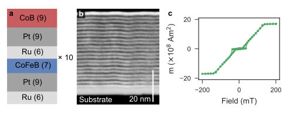
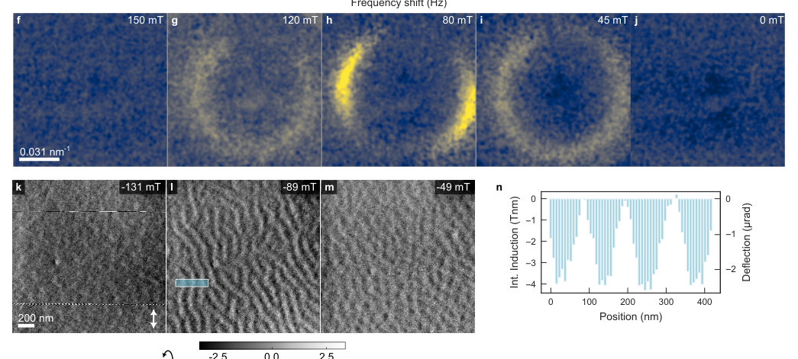
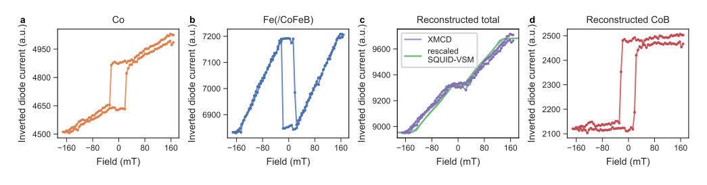

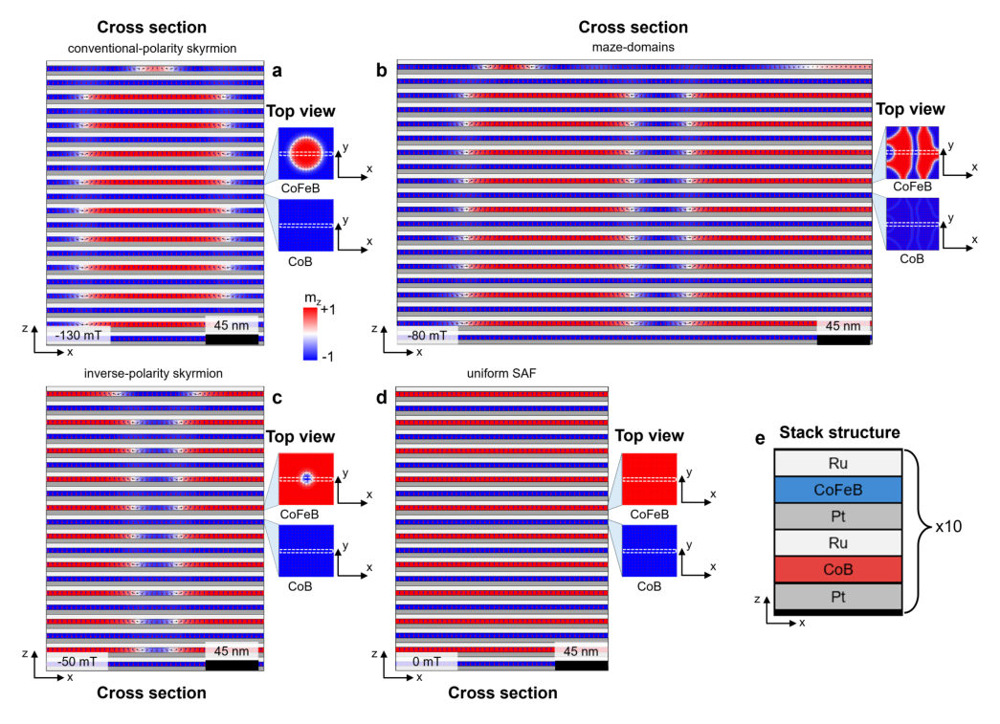
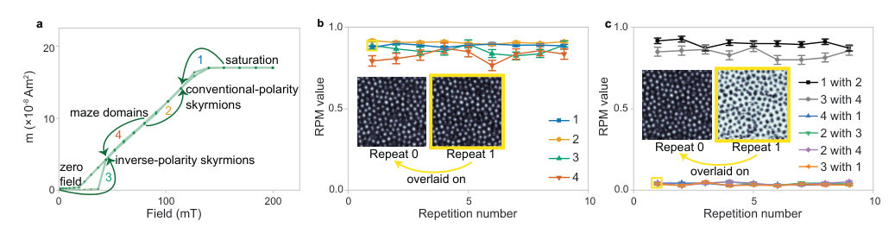
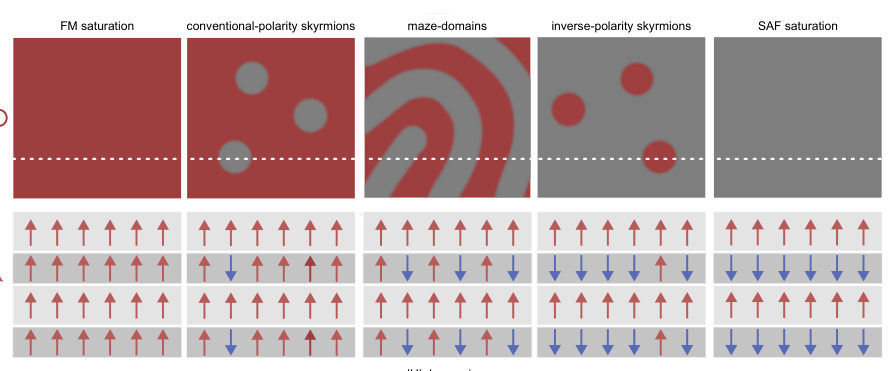
158 papers · 32 relevant · 2 highlighted
Every paper with at least one nonzero topic score, sorted by best-matching score. 🔥 marks scores ≥4/5. Click the title to jump to the full entry below; click [arXiv] to open the paper page. (secondary) marks papers from de-prioritized cond-mat archives.
Tavis-Cummings & cavity-many-emitter 5/5 · 🔥 Dicke superradiance 4/5 · 🔥 QC/QI experiment 4/5 · 🔥 correlated cavity matter 4/5 · 🔥 quantum optics experiment 4/5 · analog quantum simulation 3/5 · correlated / nonlocal dissipation 3/5 · spintronics-quantum-optics interface 3/5 · exotic spin models in light-matter 2/5 · non-equilibrium dynamics 2/5 · superradiant laser 2/5 · driven-dissipative phase transition 1/5 · entanglement & information structure 1/5 · quantum measurements 1/5QC/QI experiment 5/5 · 🔥 Rydberg arrays 5/5 · 🔥 entanglement & information structure 4/5 · non-equilibrium dynamics 3/5 · quantum optics experiment 2/5interference shaping light 5/5 · 🔥 quantum optics experiment 5/5 · 🔥 QC/QI experiment 4/5 · entanglement & information structure 2/5 · quantum measurements 2/5QC/QI experiment 5/5 · analog quantum simulation 3/5 · non-equilibrium dynamics 3/5 · quantum optics experiment 3/5 · entanglement & information structure 2/5Dicke superradiance 4/5 · 🔥 correlated / nonlocal dissipation 4/5 · 🔥 interference shaping light 4/5 · free-space correlated emission 3/5 · superradiant laser 3/5 · methods for driven-dissipative 2/5 · non-equilibrium dynamics 2/5QC/QI experiment 4/5 · 🔥 entanglement & information structure 4/5 · 🔥 quantum optics experiment 4/5 · non-equilibrium dynamics 3/5 · correlated / nonlocal dissipation 2/5 · quantum measurements 2/5QC/QI experiment 4/5 · 🔥 Rydberg arrays 4/5 · interference shaping light 3/5 · methods for driven-dissipative 2/5 · quantum optics experiment 2/5Keldysh / 2PI / non-Gaussian methods 4/5 · 🔥 entanglement & information structure 4/5 · non-equilibrium dynamics 3/5 · non-equilibrium universality 2/5 · scars & prethermalization 2/5entanglement & information structure 4/5 · 🔥 non-equilibrium dynamics 4/5 · Keldysh / 2PI / non-Gaussian methods 2/5 · non-equilibrium universality 2/5 · scars & prethermalization 2/5correlated / nonlocal dissipation 4/5 · entanglement & information structure 3/5 · Keldysh / 2PI / non-Gaussian methods 2/5 · methods for driven-dissipative 2/5 · non-equilibrium dynamics 2/5QC/QI experiment 4/5 · 🔥 quantum optics experiment 4/5 · interference shaping light 2/5 · quantum measurements 2/5entanglement & information structure 4/5 · non-equilibrium dynamics 3/5 · non-equilibrium universality 2/5 · scars & prethermalization 2/5quantum optics experiment 4/5 · quantum measurements 3/5 · Tavis-Cummings & cavity-many-emitter 2/5 · correlated / nonlocal dissipation 2/5QC/QI experiment 4/5 · correlated / nonlocal dissipation 2/5 · non-equilibrium dynamics 2/5 · quantum measurements 2/5quantum measurements 4/5 · methods for driven-dissipative 3/5 · non-equilibrium dynamics 3/5QC/QI experiment 4/5 · 🔥 quantum optics experiment 4/5non-equilibrium dynamics 4/5 · analog quantum simulation 2/5 · non-equilibrium universality 2/5QC/QI experiment 4/5 · exotic spin models in light-matter 2/5 · quantum measurements 2/5entanglement & information structure 4/5 · Keldysh / 2PI / non-Gaussian methods 2/5 · non-equilibrium dynamics 2/5Keldysh / 2PI / non-Gaussian methods 4/5 · methods for driven-dissipative 2/5 · non-equilibrium dynamics 2/5(secondary) — 🔥 non-equilibrium dynamics 4/5 · spintronics-quantum-optics interface 3/5entanglement & information structure 4/5 · non-equilibrium dynamics 3/5entanglement & information structure 4/5 · quantum measurements 2/5QC/QI experiment 4/5 · non-equilibrium dynamics 2/5Kondo & dissipative impurity 4/5 · Keldysh / 2PI / non-Gaussian methods 2/5quantum measurements 4/5 · entanglement & information structure 2/5methods for driven-dissipative 4/5 · non-equilibrium dynamics 2/5QC/QI experiment 4/5 · entanglement & information structure 1/5entanglement & information structure 4/5QC/QI experiment 4/5QC/QI experiment 4/5QC/QI experiment 4/5Papers by authors on your watch list. Click the title to jump to the full entry below; click [arXiv] to open the paper page.
Papers from quant-ph and your primary cond-mat archives (quant-gas, stat-mech, str-el, dis-nn). Highlighted papers (⭐) come first, then everything else sorted by topic-relevance score, highest first.
← Index · ← Previous · Next →
Authors: Sourav Baiju, Payam Kaghazchi
Type: theory · Category: numerical methods · PDF: https://arxiv.org/pdf/2604.26264v1
Analysis basis: abstract only; PDF text extraction failed or PDF unavailable
Main problem. Predicting surface stability and equilibrium crystal morphology in ionic materials is computationally expensive when using conventional Density Functional Theory (DFT).
Main result. An electrostatic-based screening approach provides a fast, scalable way to predict surface stability and morphology, capturing dominant trends across 3D and 2D materials without the cost of DFT.
Method. The method uses electrostatic energy evaluation of stoichiometric slab terminations, surface dipole moment calculations, and replica-exchange Monte Carlo simulations for surface reconstruction.
Summary. This paper introduces a computationally efficient method for predicting the surface stability and particle shape of ionic crystals. By using electrostatic analysis instead of expensive DFT calculations, the researchers can rapidly screen large numbers of surface configurations. The method successfully identifies stable facets and handles polar surfaces through Monte Carlo simulations. It is particularly useful for studying large-scale systems and high-index surfaces that are otherwise too complex for standard quantum mechanical simulations.
Model / system. The study focuses on ionic crystals, including simple and complex 3D materials as well as 2D layered oxides.
Key observables. Surface stability, equilibrium crystal morphology, surface dipole moment, and electrostatic energies.
Important parameters / regimes. Surface dipole moment (used as a descriptor), electrostatic screening, and high-index surface configurations.
Assumptions / limitations. The approach assumes that electrostatic interactions capture the dominant trends in relative surface stability, bypassing the need for full electronic structure calculations.
Paper structure. The paper introduces a new electrostatic-based screening method, describes the implementation for identifying polar surfaces and reconstruction, validates the method against DFT and experimental data for 3D and 2D materials, and discusses the implications for high-throughput materials discovery.
This work presents a fast and scalable approach for predicting surface stability and equilibrium crystal morphology in ionic materials using electrostatic analysis. The method constructs stoichiometric slab terminations and evaluates their electrostatic energies, enabling high-throughput screening of surface configurations at a fraction of the cost of conventional approaches. Polar surfaces are identified through surface dipole moment calculations and stabilized via electrostatics-based reconstruction using replica-exchange Monte Carlo simulations. The surface dipole moment further emerges as an effective descriptor to distinguish the behavior of different classes of materials. By bypassing expensive Density Functional Theory (DFT) calculations, the approach extends naturally to large systems and high-index surfaces that are typically inaccessible to DFT. Electrostatic interactions are shown to capture the dominant trends in relative surface stability across diverse material systems. The method is validated on simple and complex 3D materials as well as 2D layered oxides, where the predicted dominant facets are consistent with reported density functional theory and experimental observations. Importantly, the framework also reveals cases where high-index surfaces play a non-negligible role in the equilibrium morphology. These results establish electrostatics as a fast and reliable route for high-throughput prediction of surface stability and particle morphology, opening a pathway for accelerated materials discovery and providing a robust starting point for more detailed calculations in complex energy materials.
Authors: Kartick Ramakrishnan, Phani Motamarri
Type: theory · Category: numerical methods · PDF: https://arxiv.org/pdf/2604.26037v1
Analysis basis: full PDF text, analyzed in chunks
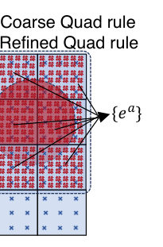
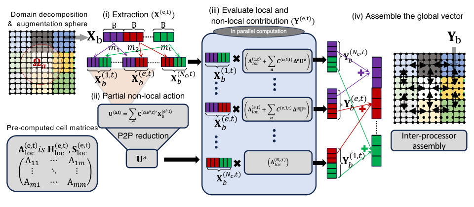
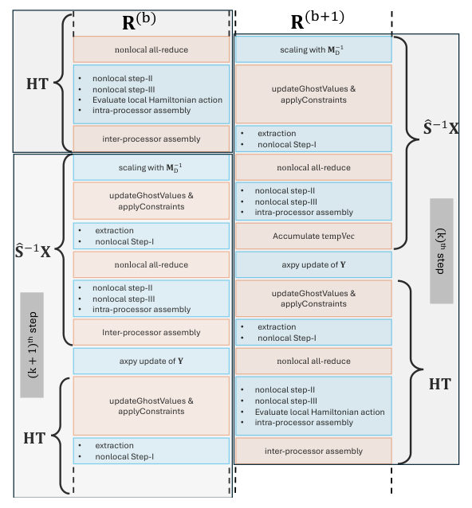
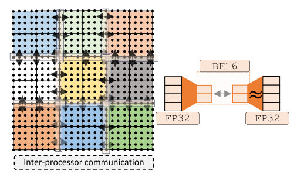
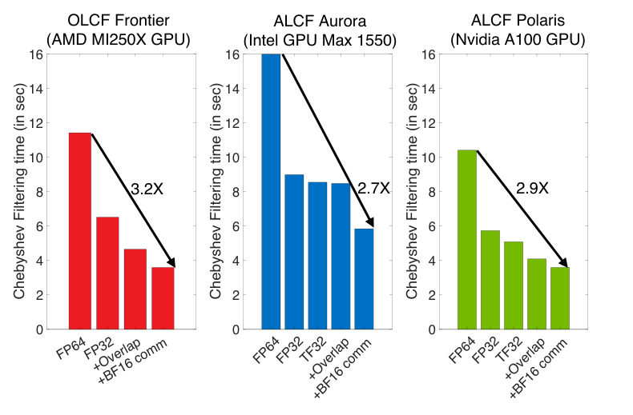
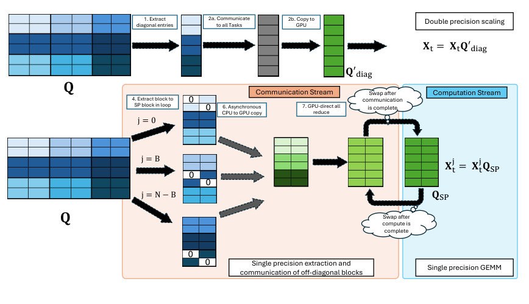
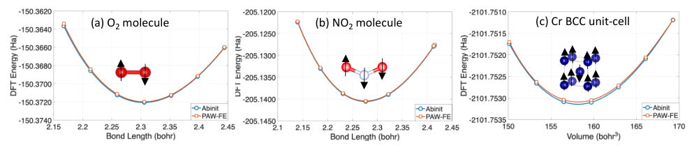
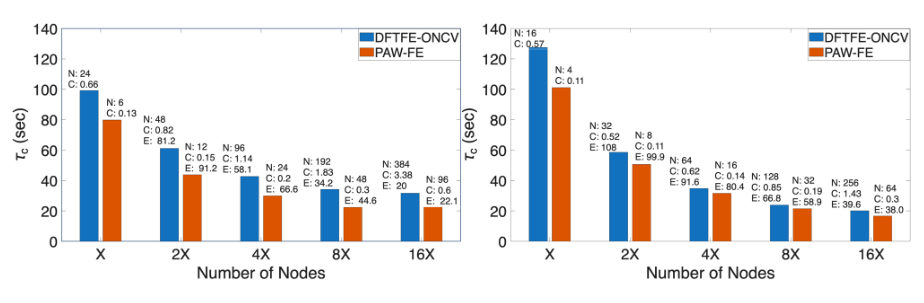
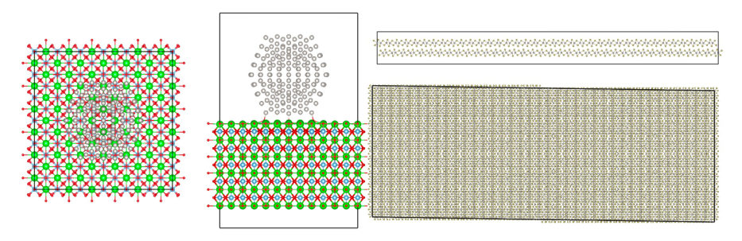
Main problem. The challenge of performing accurate, large-scale Kohn-Sham density functional theory (DFT) calculations for complex systems (up to 10^5 electrons) on modern exascale GPU architectures without the communication bottlenecks of plane-wave methods.
Main result. The development of a GPU-centric, finite-element-based PAW (PAW-FE) method that achieves up to 20x speedup on AMD GPUs and significantly reduces time-to-solution compared to plane-wave and norm-conserving FE methods, demonstrating scalability to 130,000 electrons.
Method. A finite-element discretization of the Projector Augmented-Wave (PAW) formalism using a residual-based Chebyshev Filtered Subspace Iteration (R-ChFSI) eigensolver, optimized with mixed-precision arithmetic (FP32/TF32/BF16) and computation-communication overlap.
Summary. This paper presents a new computational method (PAW-FE) for large-scale electronic structure calculations. By combining finite-element discretization with the Projector Augmented-Wave method, the authors avoid the global communication bottlenecks of traditional plane-wave codes. The implementation is specifically designed for modern GPUs, using mixed-precision arithmetic and optimized kernels to achieve massive speedups. This allows for the simulation of much larger and more complex material systems, such as moiré superlattices, on exascale supercomputers.
Model / system. The framework uses Kohn-Sham DFT within the PAW formalism and the frozen-core approximation, applied to large-scale systems such as Pt nanoclusters, WS2 slabs, and twisted bilayer WTe2.
Key observables. Ground-state electronic structure, pseudo electron density, magnetization density, total energy, and ionic forces.
Important parameters / regimes. System sizes up to 130,000 electrons; use of GGA exchange-correlation; multi-resolution quadrature; and various GPU precision modes (FP32, TF32, BF16).
Assumptions / limitations. Uses the frozen-core approximation and assumes a collinear spin formalism; relies on the efficiency of the R-ChFSI algorithm's tolerance to inexact matrix-multivector products.
Figures summary. The paper includes diagrams of the operator action for the PAW Hamiltonian, algorithmic descriptions of the SCF cycle and subspace construction, and performance comparison plots (speedup and scaling) against Quantum ESPRESSO and previous FE implementations.
Paper structure. The paper introduces the computational bottleneck of large-scale DFT, defines the PAW-FE mathematical framework and discretization, details the GPU-centric algorithmic innovations (R-ChFSI and precision strategies), presents performance benchmarks on various GPU architectures, and demonstrates scalability on massive systems.
Accurate large-scale Kohn-Sham density functional theory (DFT) calculations are essential for modeling complex material systems, including interfaces, defects, nanoclusters, and twisted two-dimensional heterostructures. Achieving chemical accuracy at scales of $10^4$-$10^5$ electrons with practical time-to-solution, however, remains challenging for existing DFT implementations. We present GPU-centric computational methods and algorithmic innovations within a finite-element (FE) discretized projector augmented-wave (PAW) formulation (PAW-FE) for accurate, efficient, and scalable electronic-structure calculations on modern exascale systems. The FE discretization, developed within a collinear spin formalism, accommodates generic boundary conditions and employs multi-resolution quadrature for accurate evaluation of atom-centered PAW integrals on coarse grids. The resulting generalized Hermitian eigenproblem is solved using residual-based Chebyshev filtered subspace iteration (R-ChFSI). Exploiting R-ChFSI's tolerance to inexact matrix-multivector products, we employ an approximate inverse PAW overlap matrix, mixed-precision arithmetic (FP32/TF32), and low-precision nearest-neighbor communication (BF16) during filtered subspace construction, along with block-wise computation-communication overlap to reduce cost while preserving robustness. These strategies yield up to $8\times$ and $20\times$ CPU-GPU speedups on Intel and AMD GPU architectures, respectively. Compared to plane-wave PAW methods, PAW-FE achieves close to 8$\times$ reduction in time-to-solution for 10,000-electron systems on NVIDIA GPUs, with larger gains at scale, and around 6$\times$ over norm-conserving FE approaches. We demonstrate scalability to 130,000-electron systems, establishing PAW-FE as an exascale-ready method for chemically accurate first-principles simulations.
Authors: Yangchen He, Jessica Kienbaum, Wuzhang Fang, Hongrui Ma, Ying Wang, Ping Yuan, Daniel A. Rhodes
Type: experiment · Category: other · PDF: https://arxiv.org/pdf/2604.26164v1
Analysis basis: full PDF text, analyzed in chunks
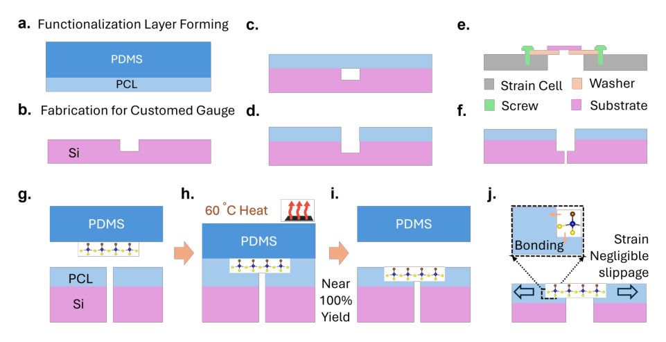
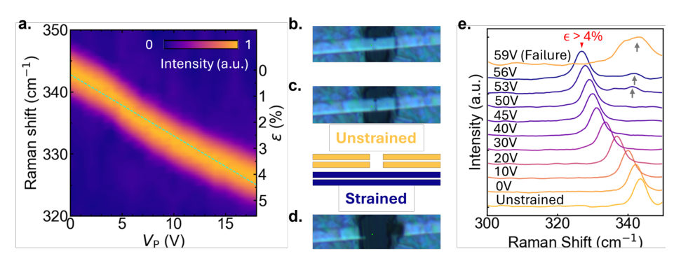
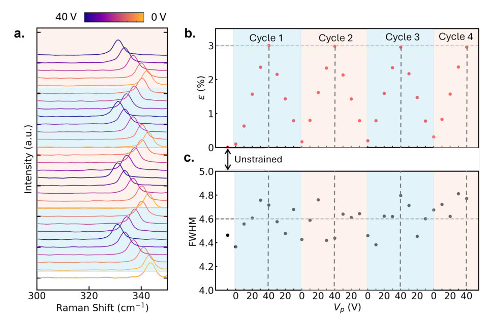
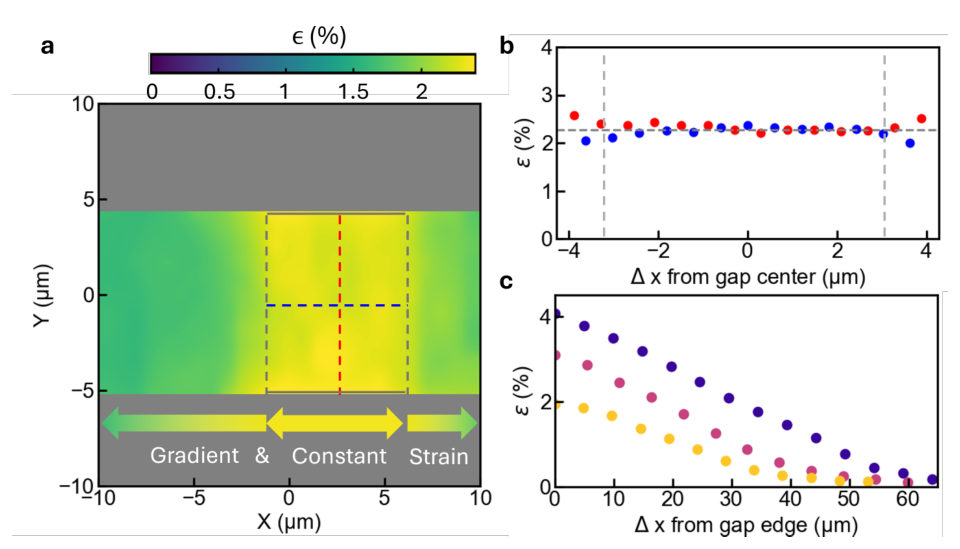
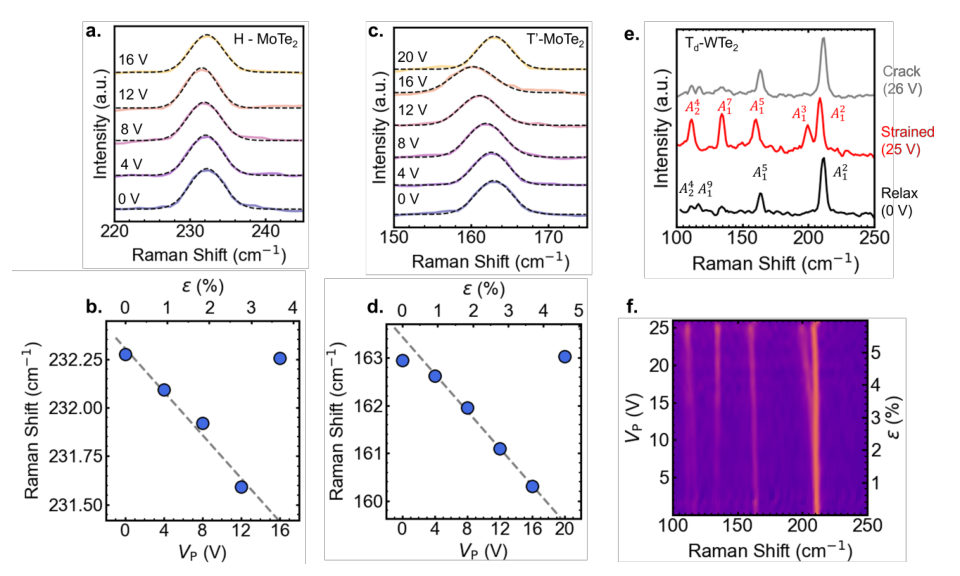
Main problem. Existing methods for strain engineering in 2D materials are limited to low strain values (<1.5%), suffer from poor reproducibility, and exhibit low strain transfer at cryogenic temperatures.
Main result. The authors developed a high-yield, reliable platform using PCL-functionalized Si substrates and a piezo-stack to achieve large, reversible, and homogeneous uniaxial strain up to the intrinsic failure limits of materials, including a record 5.5% in Td-WTe2.
Method. A piezo-stack-based strain cell is used with a custom Si substrate featuring an etched trench, functionalized with a polycaprolactone (PCL) film to enhance adhesion and strain transfer via a reversed dry transfer method.
Summary. This paper presents a new experimental platform for applying large and uniform mechanical strain to 2D materials. By using a specialized silicon substrate functionalized with a polymer, the researchers achieved strain levels far exceeding previous limits, reaching up to 5.5% in WTe2. The method is highly reproducible, works at cryogenic temperatures, and even allows for the creation of controlled strain gradients. This enables the systematic study of strain-induced phase transitions and new physical phenomena like flexoelectricity in 2D systems.
Model / system. The platform is demonstrated on various 2D materials, specifically CrSBr as a primary model for strain calibration, and transition metal dichalcogenides (TMDs) including 2H-MoTe2, 1T'-MoTe2, and Td-WTe2.
Key observables. Raman spectroscopy (peak shifts, FWHM, and mode splitting), Raman mapping for strain distribution, and optical imaging of cracks/failure.
Important parameters / regimes. Strain magnitudes up to 5.5%, temperature range down to 2 K, strain gradients up to 0.06%/um, and piezoelectric voltage (Vp) as a control parameter.
Assumptions / limitations. The method assumes that the PCL layer provides sufficient adhesion and that the piezoelectric voltage serves as a linear proxy for applied strain.
Figures summary. Figure 1 shows the substrate setup and transfer process; Figure 5 illustrates the evolution of Raman spectra and peak positions for various MoTe2 phases under strain; supplementary figures show strain distribution maps and DFT validation.
Paper structure. Introduction to strain engineering limitations, description of the experimental strain platform and fabrication, validation using CrSBr, demonstration of broad applicability across TMD phases, and theoretical validation via DFT.
Strain engineering is a powerful tool for tuning the electronic, magnetic, and topological properties of two-dimensional (2D) materials and thin films - particularly at high values of strain (>3%) where many electronic, magnetic, and structural transitions have been predicted. However, most approaches to tuning strain in 2D materials are limited below 1.5%, with poor repeatability when cycling strain and low strain transfer when cooling to cryogenic temperatures. Here, we report a high-yield sample preparation and device strain platform that overcomes these limitations, enabling precise, reversible strain tuning up to the intrinsic strain-to-failure of the materials tested herein. In addition, we show that this platform can be used to controllably design uniform linear strain gradients across of 10's of $μ$m, providing a novel route to systematically investigate flexoelectric and flexomagnetic phenomena. Using CrSBr as a model system, we demonstrate uniform uniaxial strain, up to ~4%, with negligible slippage and linear strain gradients of up to 0.06%/$μ$m. We further show that our strain approach is applicable to a broad class of 2D materials, validating its performance for three different phases of transition metal dichalcogenides: 2H-MoTe$_2$, 1T$^\prime$-MoTe$_2$ and T$_\mathrm{d}$-WTe$_2$. In T$_\mathrm{d}$-WTe$_2$, verified by theoretical calculations, we show a continuous redshift of the A$_1^3$ mode, up to a record-breaking ~5.5% strain, with a clear separation of the A$_1^3$ and A$_1^2$ modes starting at 2% strain.
Authors: Holger-Dietrich Saßnick, Joshua Edzards, Timo Reents, Caterina Cocchi
Type: theory · Category: disordered systems and neural networks · PDF: https://arxiv.org/pdf/2604.26551v1
Analysis basis: abstract only; PDF text extraction failed or PDF unavailable
Main problem. The need for robust, reliable, and easy-to-use software to automate high-throughput density functional theory (DFT) workflows and manage large datasets in computational materials science.
Main result. The introduction of aim2dat, a Python-based toolkit that enables automated ab initio modeling, high-throughput screening, and seamless integration of machine learning models for materials analysis.
Method. Development of a Python package featuring interfaces to online databases, automated workflow design for DFT calculations, and tools for big data processing and machine learning integration.
Summary. The paper presents aim2dat, a new Python infrastructure designed to automate the process of materials modeling using ab initio methods. It provides tools for querying databases, running high-throughput DFT workflows, and analyzing large datasets. The package is specifically built to bridge the gap between large-scale computational simulations and machine learning analysis. By streamlining these workflows, it facilitates the discovery of new compounds in fields like photovoltaics and MOF chemistry.
Model / system. The toolkit is applied to various computational materials systems, specifically mentioning photocathode materials and metal-organic frameworks (MOFs).
Assumptions / limitations. The toolkit assumes the availability of density functional theory (DFT) calculation capabilities and access to online structural databases.
Paper structure. The paper introduces the aim2dat toolkit, describes its key features (database interfaces, high-throughput routines, ML integration), and demonstrates its utility through various use-cases including photocathodes and MOFs.
The emergence of data-driven computational materials science offers unprecedented opportunities to explore complex material landscapes, complementing experimental research with the discovery of novel compounds. To enable these developments, it is essential to establish robust, reliable, and easy-to-use software supporting workflow automation and large dataset processing. Herein, we introduce the Automated Ab Initio Materials Modeling and Data Analysis Toolkit (aim2dat), a Python package offering a user-friendly interface to generate and handle big data, design high-throughput workflows based on density functional theory calculations, and analyze the output. Its key features include interfaces to online databases for structure query and analysis, high-throughput screening routines, and seamless integration of machine learning models. The capabilities of aim2dat are showcased with a variety of use-cases, ranging from photocathode materials to metal-organic frameworks.
Authors: William R. T. Tait, Sriram Murali, Chao-Hua Hsu, Jantakan Nedsaengtip, Christina Lee, R. Paxton Thedford, Vibha Kalra, Joerg G. Werner, Ulrich B. Wiesner
Type: experiment · Category: other · PDF: https://arxiv.org/pdf/2604.26222v1
Analysis basis: full PDF text, analyzed in chunks
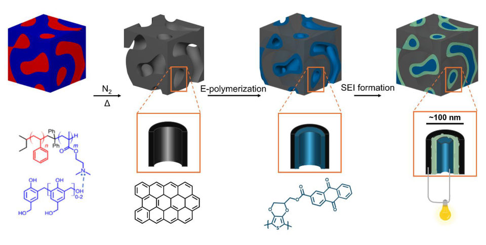
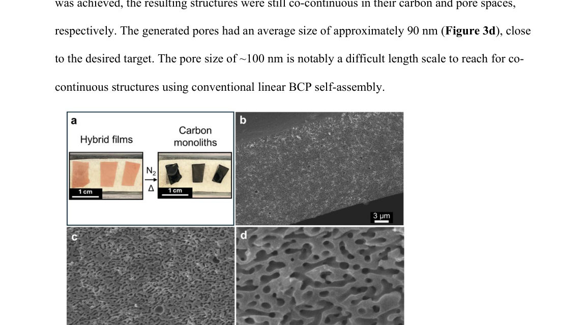
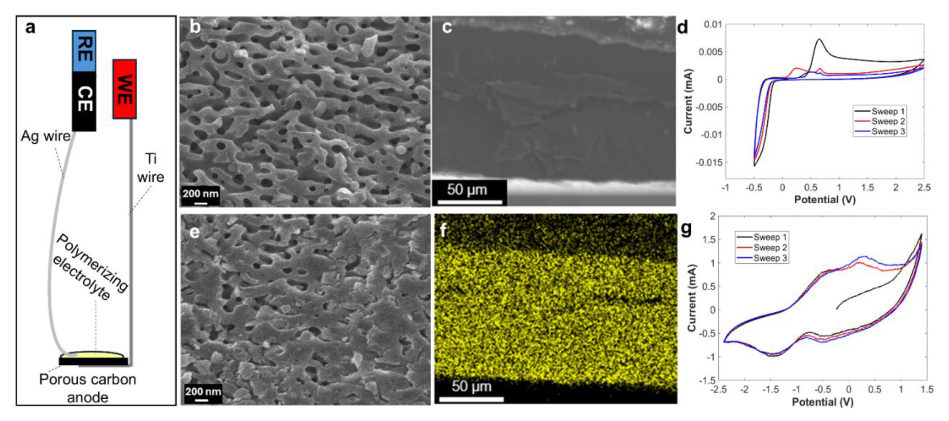
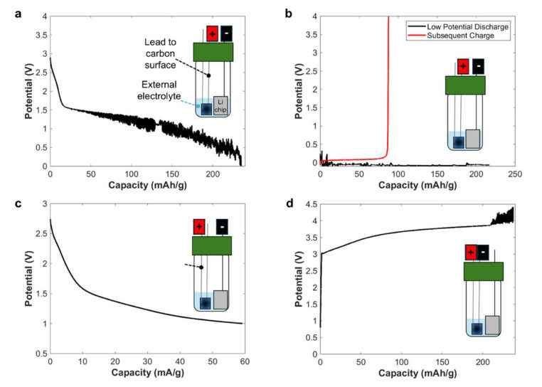
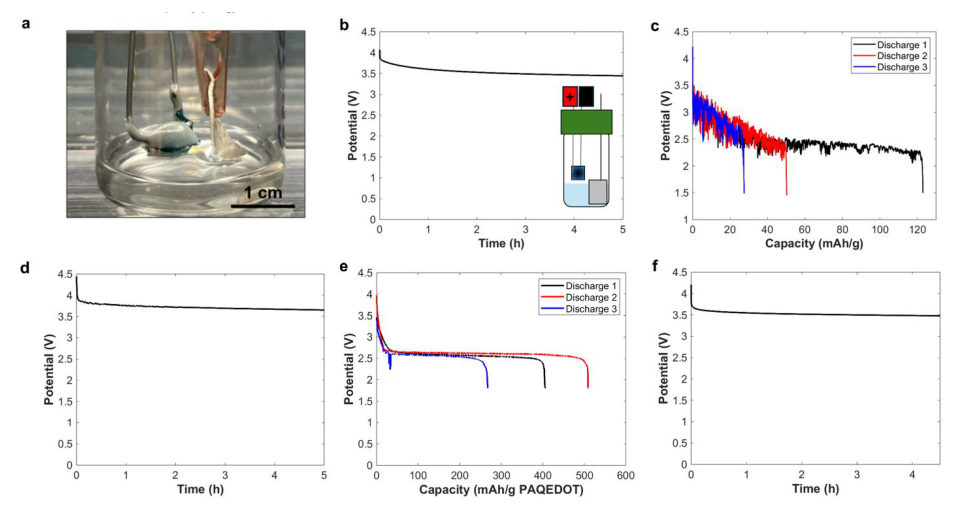
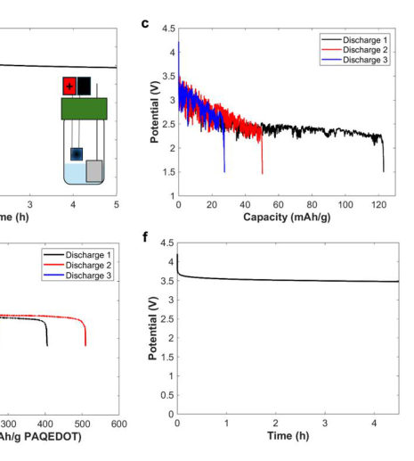
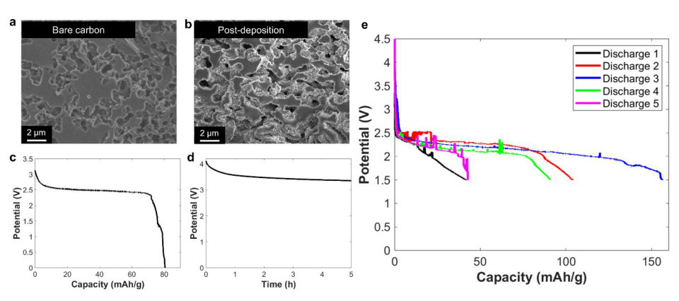
Main problem. The challenge of creating a 3D nanoarchitected, all-organic electrochemical energy storage device that achieves efficient electrode separation and high capacity without traditional 2D-layered components.
Main result. The realization of the first all-organic, 'self-separating' 3D nanoarchitected lithium-ion device, where an in-situ generated SEI acts as the separator, achieving a discharge capacity of 267 mAh/g.
Method. The researchers used ultra-large molar mass block copolymer-directed self-assembly to create a porous carbon anode, electropolymerized a redox-active polymer (PAQEDOT) into the pores, and used electrochemical cycling to grow a solid electrolyte interphase (SEIT) as a separator.
Summary. This paper reports the development of a novel 3D-structured, all-organic battery architecture. By using block copolymer self-assembly, the authors created a porous carbon framework that is infiltrated with a redox-active polymer. Instead of a physical separator, they used electrochemical cycling to grow a solid electrolyte interphase that naturally separates the anode and cathode. While the device currently faces challenges with rapid capacity fade, it demonstrates a new 'self-separating' manufacturing paradigm for energy storage.
Model / system. A 3D nanoarchitected, all-organic, solid-state full cell consisting of a monolithic carbon anode with a co-continuous pore network and an interpenetrating cathode of the conductive polymer PAQEDOT.
Key observables. Discharge capacity (mAh/g), open circuit potential (OCP), electrochemical impedance spectroscopy (EIS) signatures, and redox potentials via cyclic voltammetry.
Important parameters / regimes. Pore size (~90-100 nm), voltage window (-0.6 V to 4.2 V vs. Li/Li+), and mass ratios of carbon to polymer (e.g., 3:1 or 2:1).
Assumptions / limitations. The design assumes that the in-situ generated SEI will be sufficiently insulating to prevent short circuits while remaining ionically conductive.
Figures summary. Figure 1 compares 2D vs 3D architectures; Figure 3 shows carbonization and SEM morphology; Figure 5 illustrates the electrochemical processing steps for SEI formation; Figure 7 shows SEM of membrane-templated carbons and cycling stability.
Paper structure. The paper introduces the 3D architecture problem, details the synthesis of the BCP and monomers, describes the fabrication of the carbon anode and polymer cathode, explains the electrochemical 'activation' process for SEI formation, and concludes with performance analysis and degradation mechanisms.
This work realizes a three-dimensionally (3D) nanoarchitected, all organic, "self-separating" lithium-ion electrochemical energy storage (EES) device that is cycled as a solid-state full cell. The device is enabled by a monolithic carbon anode with a co-continuous pore network, derived from the structure direction of resols by an ultra-large molar mass block copolymer (BCP), poly(styrene-block-2-dimethylaminoethyl methacrylate) (SA). Electropolymerization of a single-phase conductive and redox-active material, poly((2,3-dihydrothieno[3,4-b][1,4]dioxin-2-yl)methyl 9,10-dioxo-9,10-dihydroanthracene-2-carboxylate) (PAQEDOT), into the pore space provides the cathode of the cell. The device is electronically contacted to the relevant electrode network enabled by the co-continuous nature of each electrode. Electrochemical processing via cycling against external lithium in an electrolyte generates a solid electrolyte interphase (SEI) as a separator and lithiates the cell electrodes, after which the EES device is cycled in the solid state. While the full cell does not demonstrate high cyclability, the best full cell demonstrates a discharge capacity of 267 milliamp hours per gram (mAh/g). This work marks, to the best of knowledge of the authors, the first example of an all-organic materials derived 3D nanoarchitected EES device, as well as the first design of "self-separating" cell fabrication. Furthermore, generalization of the design to another co-continuous carbon form factor is demonstrated.
Authors: Benjamin Poole, David Lunt, Luke Hewitt, Chris Hardie
Type: experiment · Category: other · PDF: https://arxiv.org/pdf/2604.26515v1
Analysis basis: full PDF text, analyzed in chunks
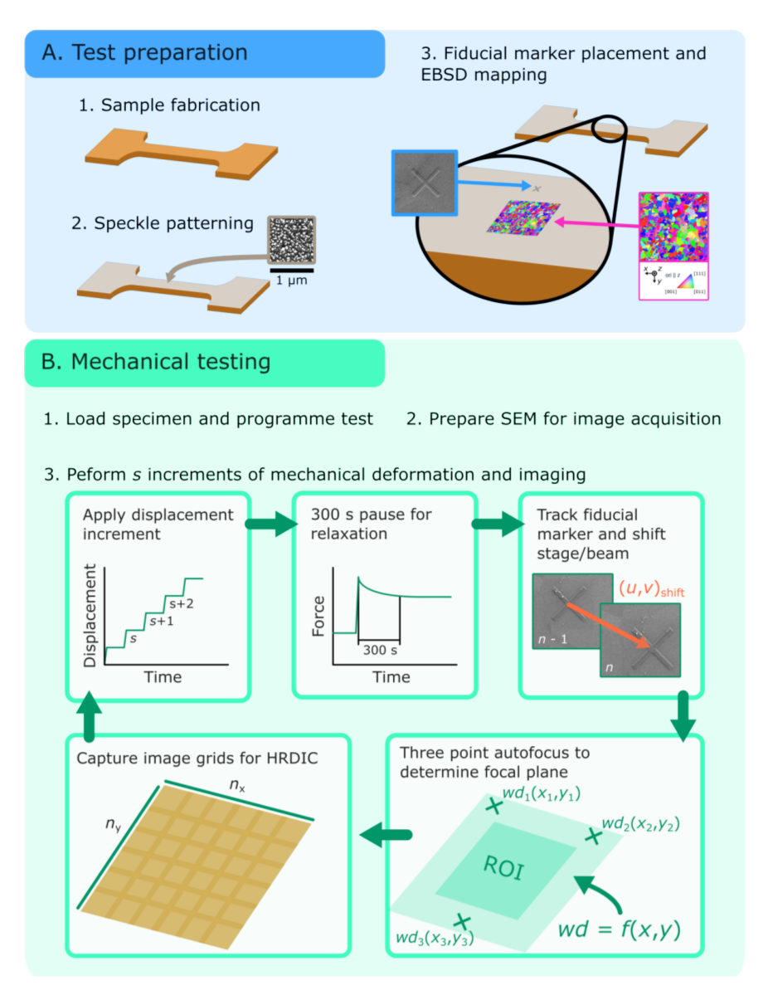
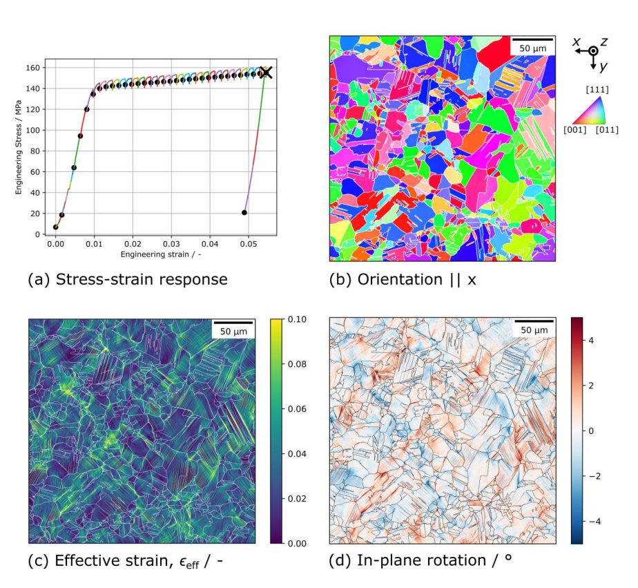
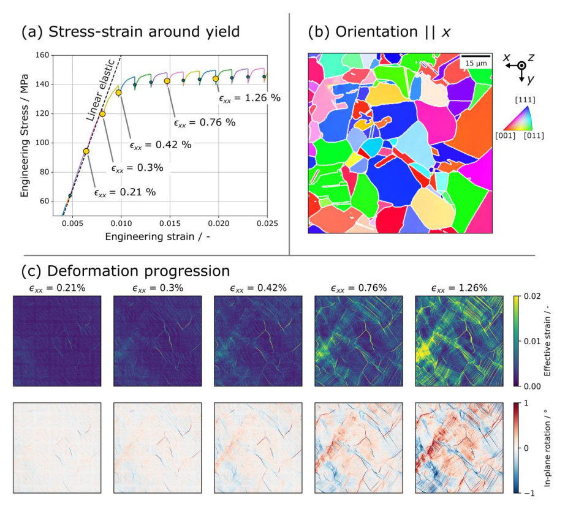
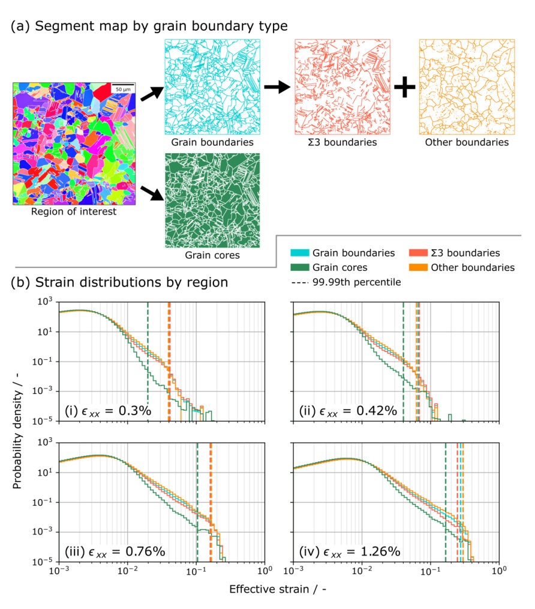
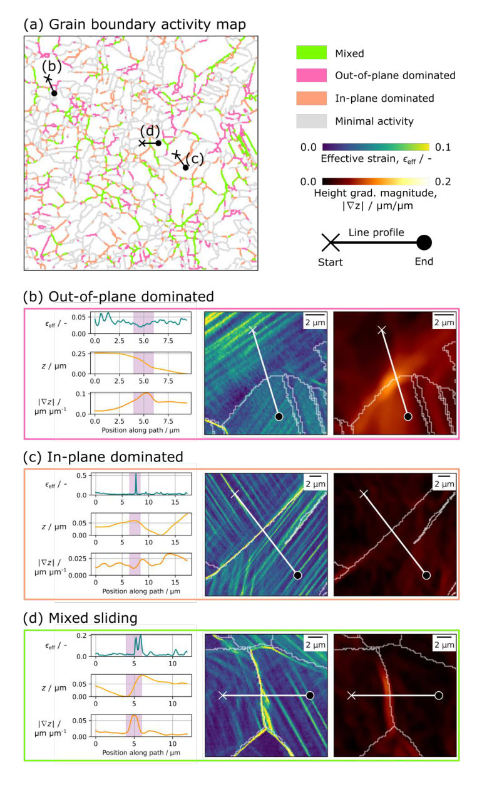
Main problem. Investigating the mechanism and timing of grain boundary sliding (GBS) in copper at room temperature, specifically challenging the view that GBS is primarily a high-temperature phenomenon.
Main result. The study reveals that grain boundary sliding occurs extensively prior to macroscopic yield and before the onset of significant crystallographic slip, exhibiting pure in-plane, pure out-of-plane, and mixed-mode sliding.
Method. In-situ mechanical loading within a Scanning Electron Microscope (SEM) using high-resolution digital image correlation (HRDIC), electron backscatter diffraction (EBSD), and laser scanning confocal microscopy (LSCM) for 3D height mapping.
Summary. This paper demonstrates that grain boundary sliding in copper occurs at room temperature during the elastic regime, before the material reaches its macroscopic yield point. By using advanced in-situ microscopy techniques, the authors show that sliding can be in-plane, out-of-plane, or mixed-mode. This discovery challenges the conventional understanding that grain boundary sliding is a phenomenon reserved for high-temperature deformation. The findings provide new insights into the early stages of plastic deformation in polycrystalline metals.
Model / system. Oxygen-free high-conductivity (OFHC) copper subjected to quasi-static tensile testing at room temperature.
Key observables. Effective strain, in-plane rotation, crystallographic slip (trans-granular bands), and height gradient magnitude (as a proxy for out-of-plane deformation).
Important parameters / regimes. Nanoscale resolution (98 nm strain field resolution), 20 um x 20 um field of view, and the distinction between pre-yield and post-yield regimes.
Assumptions / limitations. A 1.5 um dilation of grain boundaries was required to account for spatial smearing and potential misalignments between EBSD and HRDIC maps.
Figures summary. Fig 1: Experimental workflow; Fig 2: In-situ stress-strain curve and strain/rotation maps; Fig 3: Time-series snapshots of strain evolution; Fig 4: Quantitative comparison of strain/rotation in grain cores vs. boundaries; Fig 5: Classification of sliding modes (in-plane, out-of-plane, and mixed).
Paper structure. The paper introduces the problem of GBS timing, describes the experimental setup and multi-modal imaging workflow, presents time-series strain maps and quantitative comparisons of grain cores vs. boundaries, characterizes the 3D nature of sliding, and discusses the implications for bulk vs. surface deformation.
Grain boundary sliding is typically associated with high temperature deformation in engineering alloys. Here, we examine grain boundary sliding at room temperature in oxygen-free high-conductivity copper under quasi-static tensile testing. By using high-resolution digital image correlation (HRDIC) conducted in-situ within a scanning electron microscope to produce time-series strain maps, we unexpectedly observe that grain boundary sliding occurs extensively prior to macroscopic yield, and before the onset of significant crystallographic slip. Extreme values in strain and in-plane rotation are found to be associated with grain boundaries immediately prior to yield and during the initial stages of plastic deformation, which are higher than those associated with crystallographic slip. By combining laser scanning confocal microscopy height mapping with the strain maps and orientation maps from electron backscatter diffraction, grain boundary sliding character is determined, finding evidence of pure in-plane, pure out-of-plane and mixed-mode sliding.
Authors: Kayla Fallon, Reshma Peremadathil-Pradeep, Christopher E. A. Barker, Zoey Tumbleson, Emily Darwin, Andrea Meo, Eloi Haltz, Benjamin A. Brereton, Trevor Almeida, Colin Kirkbride, Sara Villa, Sophie A. Morley, Mario Carpentieri, Riccardo Tomasello, Hans J. Hug, Christopher H. Marrows, Stephen McVitie
Type: both · Category: other · PDF: https://arxiv.org/pdf/2604.26680v1
Analysis basis: full PDF text, analyzed in chunks






Main problem. The study investigates how to engineer programmable 3D spin textures in synthetic antiferromagnets (SAFs) by using chemical asymmetry and competing magnetic interactions to move beyond conventional skyrmion types.
Main result. The researchers demonstrated the emergence of two distinct skyrmion families (conventional and inverse polarity) localized exclusively in the CoFeB layer, driven by an effective field resulting from the competition between external fields and RKKY exchange.
Method. The work combines experimental techniques including SQUID-VSM, MFM, Lorentz TEM, and element-resolved XMCD with quantitative micromagnetic simulations using the PETASPIN solver.
Summary. This paper describes the engineering of a synthetic antiferromagnet that hosts two different types of skyrmions with opposite polarities. By using chemically distinct layers, the researchers created a system where an effective field can be tuned to control spin textures in a specific layer. This approach allows for the creation of programmable 3D spin architectures. Such advancements are significant for the development of next-generation skyrmion-based computing and spin-logic devices.
Model / system. A compensated synthetic antiferromagnet (SAF) multilayer stack consisting of alternating CoB and CoFeB sublattices, engineered with asymmetric magnetic energy scales.
Key observables. Skyrmion polarity, magnetic induction, magnetization loops, return-point memory values, and element-specific magnetization.
Important parameters / regimes. Interlayer exchange coupling (RKKY), Dzyaloshinskii-Moriya interaction (DMI), perpendicular magnetic anisotropy (PMA), and external magnetic field strength.
Assumptions / limitations. Micromagnetic simulations were conducted at zero temperature, and the interfacial DMI was treated as a free parameter.
Figures summary. Figure 1 shows the evolution of magnetic textures; Figure 2 presents correlative imaging (MFM, SAXS, Lorentz STEM); Figure 3 displays element-resolved XMCD loops; Figure 4 shows micromagnetic simulation snapshots; Figure 5 illustrates return-point memory nucleation paths.
Paper structure. The paper begins with the experimental foundation (structural and magnetic parameters), moves to macroscopic magnetization measurements, progresses to microscopic element-specific imaging, and concludes with micromagnetic validation of the observed textures.
Magnetic skyrmions are topologically protected spin textures that can act as reconfigurable nanoscale information carriers. In synthetic antiferromagnets (SAFs), interlayer exchange coupling offers an additional control parameter beyond the interfacial Dzyaloshinskii-Moriya interaction (DMI) and magnetic anisotropy. Here, we engineer a SAF composed of two chemically distinct ferromagnets (CoB and CoFeB), in which the external magnetic field and interlayer exchange act asymmetrically on the sublattices. The competition of these effects, acting as a resultant effective-field, gives rise to two distinct skyrmion families in different field regimes. In large fields, conventional-polarity skyrmions nucleate, with core antiparallel to the external field, whereas in smaller fields an inverse-polarity skyrmion state emerges as the effective-field reverses sign and almost saturates the CoFeB layers. Return-point memory measurements confirm independent nucleation pathways for the two families. Using element-resolved x-ray magnetometry, correlative magnetic force and Lorentz transmission electron microscopies, and parameter-matched micromagnetic modelling, we show that all textures reside only in the CoFeB layers, which experience a Ruderman-Kittel-Kasuya-Yosida (RKKY) exchange field originating from the CoB layers. This effective-field method provides a robust route to programmable three-dimensional spin textures with controlled polarity in selected layers of a multilayer with potential for applications in skyrmion-based computing and spin-logic architectures.
Authors: Andrés Díaz Lantada, José A. Yáñez, William Solórzano-Requejo, Monsur Islam
Type: both · Category: other · PDF: https://arxiv.org/pdf/2604.26872v1
Analysis basis: full PDF text, analyzed in chunks
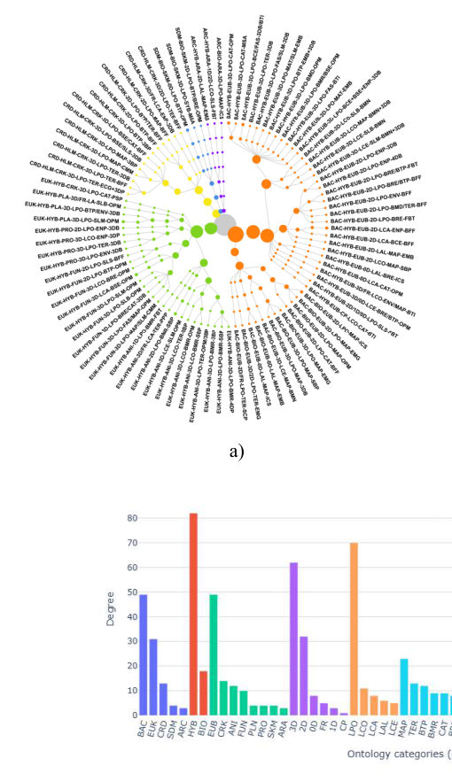
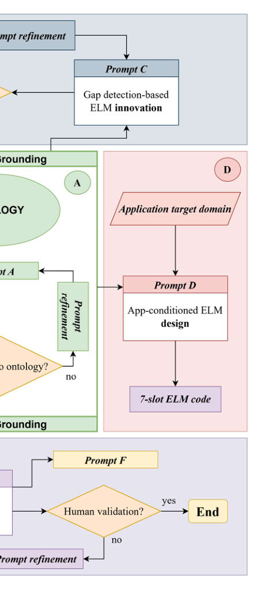
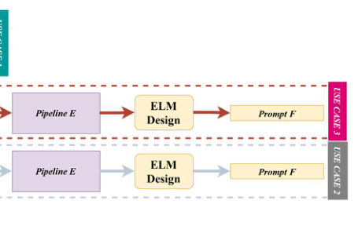
Main problem. The field of Engineered Living Materials (ELMs) lacks a standardized engineering design language and systematic classification tools to navigate its multidisciplinary complexity.
Main result. The authors developed a codified ontology and a 'genomic representation' for ELMs, demonstrating that generative AI can understand, classify, and use this language to illustrate novel material concepts.
Method. The study uses a hierarchical taxonomy (inspired by Linnean taxonomy) combined with a three-letter codification scheme, validated through a dataset of 100 ELM examples and testing via generative AI (e.g., Microsoft Copilot) for text-to-image generation and design reasoning.
Summary. This paper introduces a new standardized design language for Engineered Living Materials (ELMs) using a hierarchical ontology and a three-letter codification scheme. By creating a 'genomic representation' for these biohybrid materials, the authors demonstrate that generative AI can be trained to understand, classify, and even visually illustrate novel material designs. The framework provides a way to bridge biological complexity with machine-readable data, potentially accelerating the discovery of new materials for applications ranging from tissue engineering to space exploration.
Model / system. The system is a framework for Engineered Living Materials (ELMs), which are biohybrid materials where living cells (archaea, bacteria, eukaryotes, or synthetic) coexist with biomaterial scaffolds (polymers, ceramics, alloys, etc.).
Key observables. Not specified (focus is on ontological classification and AI-driven design generation).
Important parameters / regimes. Taxonomic ranks (Domain to Class), dimensionality (0D to 4D), material classes, and production methods.
Assumptions / limitations. The study assumes that a structured linguistic framework can effectively bridge the gap between biological complexity and machine-readable data for AI-driven discovery.
Figures summary. Figure 1 shows AI-generated illustrations of ELMs created from ontology prompts; Figure 2A presents a dendrogram of the ELM dataset; Figure 2B shows a bipartite knowledge graph of the ontology and ELM cases.
Paper structure. The paper identifies the lack of standardization, proposes a new ontology and codification scheme, applies it to a curated dataset of 100 materials, validates its utility using generative AI for visual and conceptual design, and explores its use in complex engineering tasks like space-habitat life support.
This study presents a versatile ontology and a useful codification scheme for describing all kinds of engineered living materials (ELMs). The different components of the ontology, namely: families according to the taxonomy for ELMs, industrial applications and synthesis or processing methods, are systematically organized, enumerated, classified, codified and explained. The methodic application of the ontology to a set of 100 relevant examples of ELMs helps to demonstrate its utility and adaptability to many different types of ELMs with a wide range of industrial applications and obtained through numerous synthesis and processing methods. This proves that the developed ontology and codification schemes, with the glossary provided to support its implementation and application, can serve as a comprehensive classification tool for the emergent field of ELMs. Furthermore, the usability of the ELMs ontology and codification by a generative artificial intelligence (AI) is explored and validated by different means, checking that both natural language and the codification are understandable for describing ELMs, verifying that the generative AI adequately codifies examples of ELMs according to the ontology, and validating the synergic applicability of the ontology and codification with generative AI tools for illustrating novel ELMs and supporting their conceptual design. This study is expected to provide a universal language to facilitate communication in the ELMs field and to foster the discovery of new ELMs and related innovations, hoping it may accelerate scientific and technological discoveries.
Authors: Alvaro Gonzalez-Garcia, William Lopez-Perez, Paola Pacheco, Luz Ramirez-Montes, Rafael Gonzalez-Hernandez
Type: theory · Category: strongly correlated electrons · PDF: https://arxiv.org/pdf/2604.26239v1
Analysis basis: full PDF text, analyzed in chunks
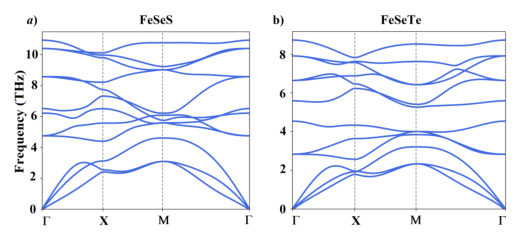
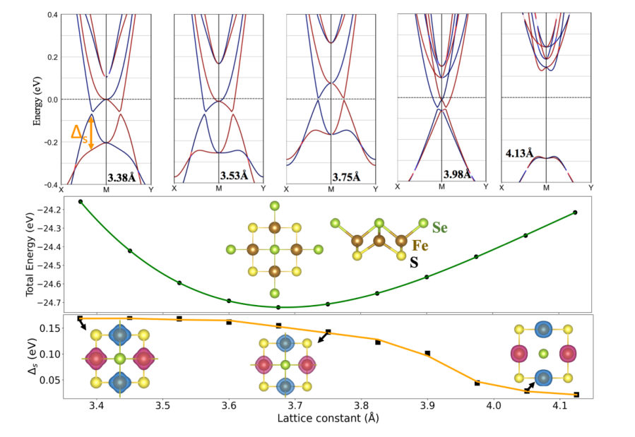
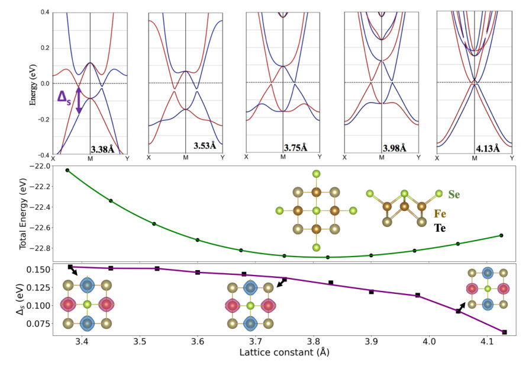
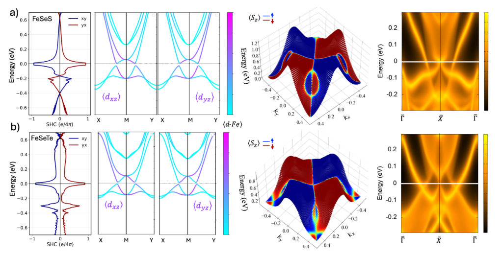
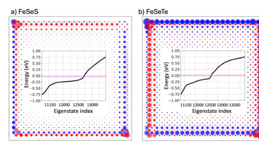
Main problem. The study investigates the coexistence of d-wave altermagnetism and topological states in Janus FeSeX (X = S, Te) monolayers and how chemical asymmetry and strain affect these phases.
Main result. The researchers found that Janus FeSeX monolayers exhibit a stable d-wave altermagnetic phase that, upon the inclusion of spin-orbit coupling, transitions into a topological insulator state with quantized spin Hall conductivity.
Method. First-principles calculations using Density Functional Theory (DFT+U) via the VASP code, including phonon dispersion for stability and Wannier-based tight-binding models for topological analysis.
Summary. This paper explores how 'Janus engineering' in FeSe-based monolayers can create a unique state of matter where altermagnetism and topology coexist. By breaking inversion symmetry through chemical asymmetry, the authors demonstrate a system that possesses momentum-dependent spin splitting without needing spin-orbit coupling. When spin-orbit coupling is added, the material becomes a topological insulator with protected edge modes. The ability to tune these properties using biaxial strain makes these materials promising candidates for low-dissipation spintronic devices.
Model / system. Janus FeSeX (X = S, Te) monolayers, which are 2D structures where one selenium sublayer in pristine FeSe is replaced by sulfur or tellurium to break inversion and mirror symmetries.
Key observables. Altermagnetic exchange splitting (delta_s), spin Chern number, Z2 topological invariant, spin Hall conductivity, and phonon frequencies.
Important parameters / regimes. Biaxial strain (compressive and tensile), spin-orbit coupling (SOC) strength, and the chemical identity of the chalcogen (S vs Te).
Assumptions / limitations. The study assumes the dynamical and thermal stability of the monolayers and focuses on the emergence of phases driven by exchange interactions and SOC.
Figures summary. Figure 1 shows phonon dispersion for stability; Figure 2 illustrates strain-dependent spin-polarized band structures and spin-density in FeSeS; Figure 3 shows the evolution of exchange splitting under strain in FeSeTe; Figure 4 displays SOC-induced topological properties and edge modes; Figure 5 shows spin-resolved edge modes in finite-size geometries.
Paper structure. The paper introduces the problem of symmetry breaking in Janus structures, presents structural and stability analyses, details the emergence of altermagnetism, explores the transition to a topological state via SOC, and discusses the effects of strain and potential spintronic applications.
The interplay between unconventional magnetism and band topology in two-dimensional materials has emerged as an important theme in condensed matter physics. Here, we present first-principles calculations that reveal the coexistence of d-wave altermagnetism and topological behavior in Janus FeSeX (X = S, Te) monolayers. The chemical asymmetry of the Janus structure breaks both out-of-plane mirror and inversion symmetries, leading to anisotropic exchange interactions and momentum-dependent spin splittings even in the absence of spin-orbit coupling, the defining signature of altermagnetism. Phonon dispersion analyses confirm the dynamical stability of both compounds, while strain-dependent calculations demonstrate that the magnitude of the altermagnetic exchange splitting ($Δ_s$) can be efficiently tuned by biaxial strain. When spin-orbit coupling is included, a finite topological band gap emerges at the Fermi level, accompanied by quantized spin Hall conductivity plateaus and nontrivial topological invariants (spin Chern number = 1, Z2=1). These findings establish FeSeS and FeSeTe as promising two-dimensional platforms for realizing topological altermagnetism and spin--orbit--driven charge--spin conversion, thus opening new avenues for low-dissipation spintronic devices.
Authors: Daeho Noh, Jaehyeong Ock, Sergey G. Menabde, Min Seok Jang
Type: both · Category: other · PDF: https://arxiv.org/pdf/2604.26260v1
Analysis basis: full PDF text, analyzed in chunks
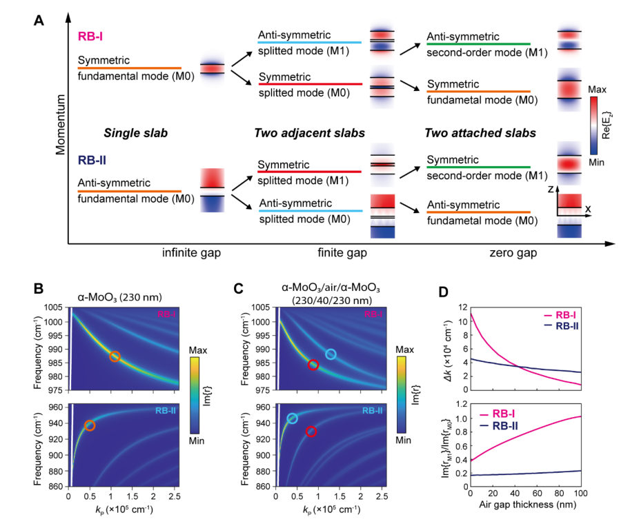
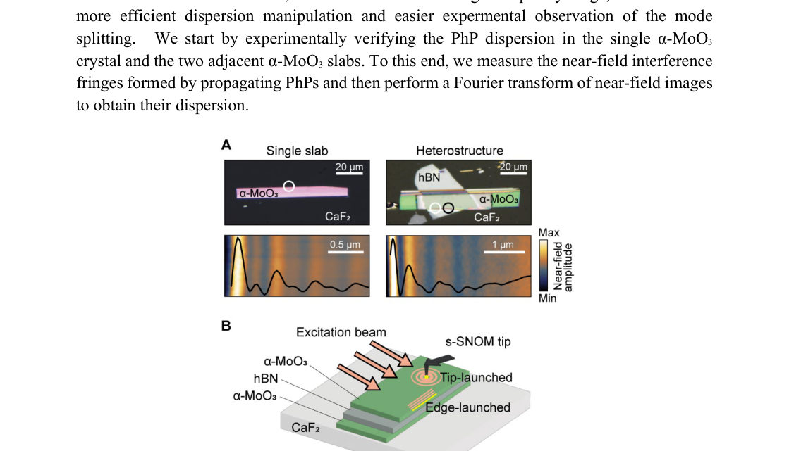
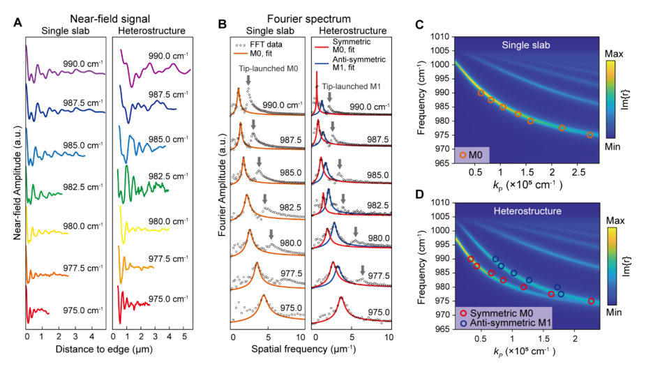
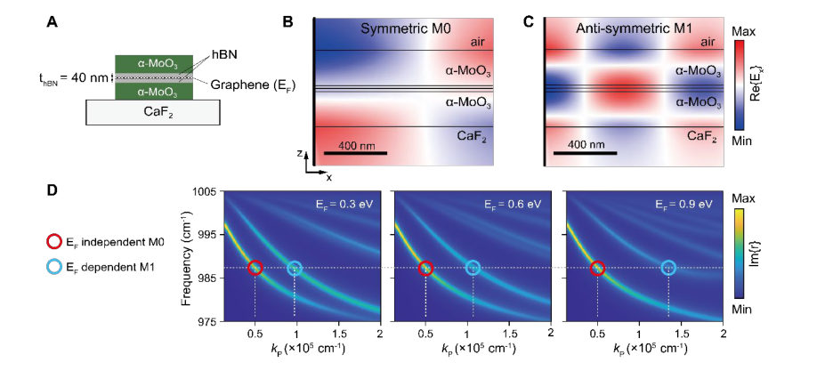
Main problem. The study aims to explore dispersion engineering of hyperbolic phonon-polaritons (PhPs) in the Type-I Reststrahlen band of alpha-MoO3 by investigating mode hybridization and splitting in van der Waals heterostructures.
Main result. The researchers experimentally demonstrated that placing two alpha-MoO3 slabs in close proximity causes PhP modes to split into symmetric and anti-symmetric branches, and proposed a method for active, mode-selective tuning using graphene.
Method. The study combines experimental scattering-type scanning near-field optical microscopy (s-SNOM) with numerical simulations using the Transfer Matrix Method (TMM).
Summary. This paper investigates how to manipulate the dispersion of hyperbolic phonon-polaritons in alpha-MoO3 heterostructures. By placing two alpha-MoO3 layers near each other, the researchers showed that the polariton modes split into two distinct branches. They also demonstrated that adding graphene allows for the active, selective control of these modes through electrical tuning. This work provides a new platform for engineering light-matter interactions at the nanoscale.
Model / system. The physical system consists of alpha-phase molybdenum trioxide (alpha-MoO3) slabs separated by a hexagonal boron nitride (hBN) spacer, with a proposed configuration incorporating graphene for electrostatic tuning.
Key observables. PhP dispersion (momentum vs. frequency), electric field symmetry (Ez component), and mode intensity.
Important parameters / regimes. Gap thickness (air gap vs. hBN spacer), slab thickness, graphene Fermi energy, and the Type-I vs. Type-II Reststrahlen band regimes.
Assumptions / limitations. The substrate (CaF2) is assumed to have a permittivity close to air to preserve the symmetry of the system.
Figures summary. Figure 1 shows schematics of field distribution and calculated PhP dispersion for single and double slabs; Figure 2 presents optical microscope images and near-field interference patterns.
Paper structure. The paper introduces the problem of dispersion engineering, presents theoretical calculations of mode splitting and symmetry, provides experimental verification via s-SNOM, and concludes with a proposal for active tuning via graphene.
The biaxial van der Waals crystal α-phase molybdenum trioxide (α-MoO3) supports hyperbolic phonon-polaritons with anomalous dispersion in the Type-I Reststrahlen band (RB-I). Despite the low loss and long lifetime of these polaritons, dispersion engineering in this regime has remained largely unexplored. In this work, we show that when two α-MoO3 slabs are placed in close proximity, their eigenmodes hybridize and the dispersion splits into two branches with different momenta and field symmetry, providing a powerful platform for dispersion manipulation. We experimentally demonstrate the polaritonic mode splitting in α-MoO3 within a heterostructure with hexagonal boron nitride (hBN) employed as a spacer, probed by a scattering-type scanning near-field optical microscope. Furthermore, we propose a design framework for active and mode-selective tailoring of the polaritonic dispersion in the heterostructure incorporating graphene, achieved through tuning its Fermi energy. Our work experimentally demonstrates the feasibility of phonon-polariton mode splitting in the RB-I and suggests a new platform for dispersion engineering of hyperbolic phonon-polaritons in general.
Authors: Tapas Bar, David Pesquera, Arnau Villalobos-Martin, Cristian Rodriguez-Tinoco, Umair Saeed, Kumara Cordero-Edwards, Jessica Padilla, Jose Manuel Caicedo Roque, Jose Santiso, Pol Lloveras, Leo Boron, Igor Lukyanchuk, Gustau Catalan, Javier Rodriguez-Viejo
Type: both · Category: statistical mechanics · PDF: https://arxiv.org/pdf/2604.26089v1
Analysis basis: full PDF text, analyzed in chunks
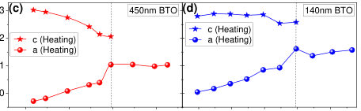
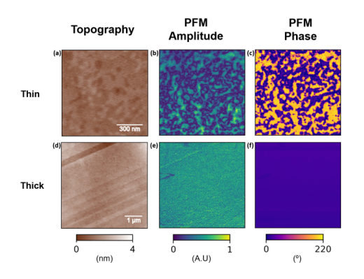
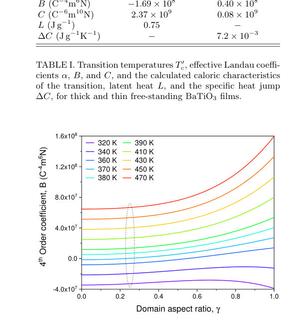
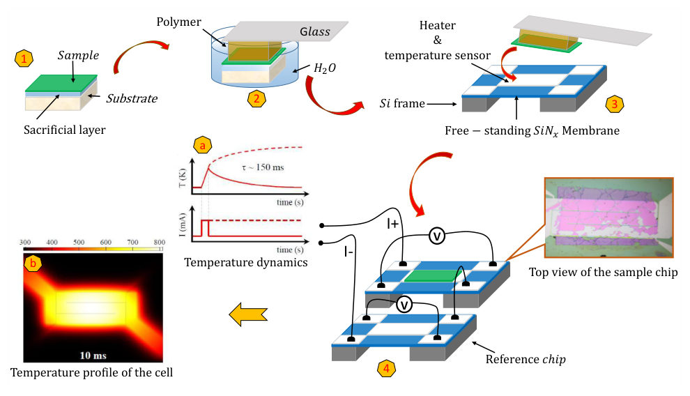
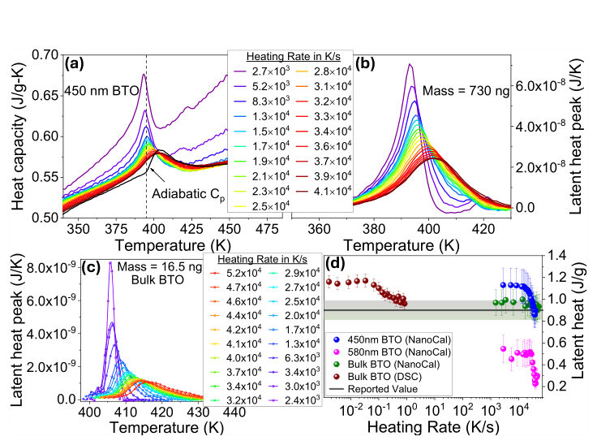
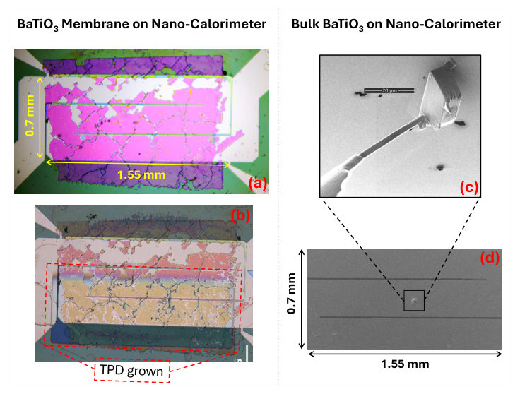
Main problem. Determining why the ferroelectric phase transition in BaTiO3 thin films changes from first-order to continuous and identifying the driver behind the loss of latent heat.
Main result. The transition order is controlled by domain morphology rather than thickness or strain; dense 180-degree domain patterns in thinner membranes drive the transition from first-order to second-order by renormalizing the Landau quartic coefficient.
Method. The study combines quasi-adiabatic nanocalorimetry to measure specific heat and latent heat, X-ray diffraction (XRD) for structural monitoring, and Piezoresponse Force Microscopy (PFM) for domain mapping, supported by Ginzburg-Landau theory.
Summary. This paper investigates the phase transition behavior of freestanding BaTiO3 membranes. By using high-speed nanocalorimetry, the authors show that thicker membranes exhibit a first-order transition with latent heat, while thinner membranes undergo a continuous second-order transition. They demonstrate that this change is driven by the evolution of domain morphology, where dense 180-degree domain patterns in thin films effectively suppress the latent heat. This finding provides a blueprint for using domain engineering to control thermodynamic properties in oxide membranes.
Model / system. Freestanding, clamping-free BaTiO3 (BTO) membranes of varying thicknesses (50 nm to 580 nm) transferred via epitaxial lift-off, analyzed using a Ginzburg-Landau-Devonshire phenomenological model.
Key observables. Specific heat capacity (Cp), latent heat, lattice parameters (a and c), domain morphology, and transition temperature (Tc).
Important parameters / regimes. Membrane thickness (50-580 nm), heating rates (10^3-10^5 K/s), and domain aspect ratio.
Assumptions / limitations. Assumes negligible thermal lag between the sample and the calorimeter due to strong van der Waals forces; assumes the reduction in latent heat in some thick samples may be due to surface contamination.
Figures summary. Figure 1 shows temperature-dependent specific heat peaks; Figure 2 displays XRD patterns and lattice parameter evolution; Figure 5 illustrates the membrane fabrication and transfer process; Figure 8 demonstrates thermal lag calibration using TPD.
Paper structure. The paper introduces the discrepancy in transition order, describes the membrane fabrication and nanocalorimetry setup, presents experimental evidence of thickness-dependent latent heat, uses PFM to correlate morphology with transition order, provides a Ginzburg-Landau theoretical explanation for coefficient renormalization, and concludes with implications for domain engineering.
Thin ferroelectric BaTiO$_3$ films often exhibit continuous transitions instead of the first-order behavior of bulk crystals, a discrepancy usually attributed to epitaxial strain or dimensionality. Using quasi-adiabatic nanocalorimetry on freestanding BaTiO$_3$ membranes-free of clamping and substrate heat sinking-we show that domain morphology, not thickness or boundary conditions, controls the transition order. Thick membranes with large, monodomain-like regions display clear latent heat, whereas thinner membranes with dense 180$^{\circ}$ domain patterns show a continuous transition despite undergoing the same tetragonal-cubic structural change confirmed by x-ray diffraction. Piezoresponse force microscopy links this behavior to domain-size evolution, and a Ginzburg-Landau analysis demonstrates how reduced domain size lowers the free-energy barrier, rounding a nominally first-order instability. These results identify domain morphology as the key determinant of ferroelectric transition order in oxide membranes and establish design guidelines for enhancing caloric effects through domain engineering.
Authors: Turgut Yilmaz, Yi Sheng Ng, Muhammad Awais Fiaz, Anil Rajapitamahuni, Asish K. Kundu, Shawna M. Hollen, Polina M. Sheverdyaeva, Paolo Moras, Ivana Vobornik, Jun Fujii, Shinichiro Ideta, Kenya Shimada, Boris Sinkovic, Elio Vescovo, Hui-Qiong Wang, Jin-Cheng Zheng
Type: both · Category: strongly correlated electrons · PDF: https://arxiv.org/pdf/2604.26685v1
Analysis basis: full PDF text, analyzed in chunks
Main problem. The study aims to identify the origin of a sharp, V-shaped electronic feature in the conduction band of 1T-TiSe2 and determine if it is a bulk band replica or a distinct surface-localized state.
Main result. The researchers discovered a genuine Surface Resonant State (SRS) that emerges due to CDW-induced symmetry breaking and band folding, which collapses around 160 K due to correlation-tuned electronic structure changes.
Method. The study uses micro-angle resolved photoemission spectroscopy (mu-ARPES) with polarization and photon-energy dependence, complemented by STM and slab DFT+U calculations.
Summary. This paper identifies a new type of surface-localized electronic state in the transition metal dichalcogenide 1T-TiSe2. Unlike topological surface states, this 'Surface Resonant State' emerges from the symmetry breaking caused by a charge density wave. The state is driven by the energetic proximity of folded bands and electronic correlations. This discovery provides a new method for engineering low-dimensional quantum states in van der Waals materials through controlled symmetry breaking.
Model / system. The physical system is 1T-TiSe2, a layered transition metal dichalcogenide exhibiting a charge density wave (CDW) phase with 2x2 commensurability.
Key observables. V-shaped surface resonant state (SRS), 2D circular Fermi surface, spectral weight transfer, and temperature-dependent band dispersion.
Important parameters / regimes. CDW transition temperature (T_CDW approx 202 K), SRS collapse temperature (approx 160 K), and the Hubbard U parameter for electronic correlations.
Assumptions / limitations. The study assumes the surface is pristine and stoichiometric, and uses the free-electron final-state approximation to estimate out-of-plane momentum.
Figures summary. Figure 1 shows ARPES intensity plots, band reconstruction schematics, and Fermi surface maps; Figure 2 demonstrates photon energy dependence and the 2D nature of the SRS.
Paper structure. The paper introduces the problem of surface electronic states, presents experimental ARPES evidence for the SRS, provides computational support via DFT+U, discusses temperature-dependent evolution and transport links, and concludes with a general framework for engineering surface states.
Surface confined electronic states provide a fertile ground for discovering emergent phenomena that have no counterpart in the bulk, offering new routes to manipulate correlations, symmetry breaking, and dimensionality at the atomic scale. Here, we show that charge density wave (CDW) symmetry breaking can yield a surface states in 1T-TiSe2. Micro angle resolved photoemission spectroscopy resolves a sharp, two dimensional surface resonant state (SRS) that emerges within the CDW reconstructed low energy spectrum. The SRS exhibits notable temperature dependence and its spectral weight collapses around 160 K, while CDW transition temperature TCDW is commonly reported as 202 K. Slab DFT+U calculations reproduce a surface localized resonance when CDW folding brings valence and conduction states into near degeneracy, suggesting a correlation tuned, surface selective origin. These results point to a form of correlation-tuned surface resonance in a layered CDW compound and suggest a framework for engineering low dimensional quantum states in van der Waals materials via symmetry breaking and electronic structure tuning.
Authors: Riccardo Vocaturo, Mattia Trama
Type: theory · Category: strongly correlated electrons · PDF: https://arxiv.org/pdf/2604.26859v1
Analysis basis: abstract only; PDF text extraction failed or PDF unavailable
Main problem. How can the topological protection of surface states in Weyl semimetals be utilized to engineer and enhance high-temperature surface superconductivity?
Main result. The authors demonstrate that depositing an additional layer on a Weyl semimetal surface can induce van Hove singularities, which significantly enhance the superconducting critical temperature when the chemical potential is tuned to these singularities.
Method. Theoretical investigation using a real-material model (PtBi2) to study the effect of surface engineering and chemical potential tuning on superconductivity.
Summary. This paper explores ways to engineer high-temperature superconductivity on the surfaces of Weyl semimetals. By adding a layer to the surface, the researchers show it is possible to create van Hove singularities that boost the critical temperature. The work highlights how the unique topological properties of Fermi arcs can be manipulated to create stable, high-temperature 2D superconducting phases. This provides a potential roadmap for designing new functional materials.
Model / system. The system consists of a Weyl semimetal surface characterized by Fermi arc electronic states, specifically using PtBi2 as a motivating example, with an additional layer deposited on top to manipulate surface electronic states.
Key observables. Superconducting critical temperature (Tc) and the presence of surface van Hove singularities.
Important parameters / regimes. Chemical potential position relative to van Hove singularities and the presence of an additional surface layer.
Assumptions / limitations. The study assumes the existence of surface-only superconductivity mediated by Fermi arcs and focuses on the impact of induced van Hove singularities.
Paper structure. The paper introduces the concept of surface superconductivity in Weyl semimetals, presents a model for inducing van Hove singularities via surface layering (using PtBi2 as a case study), analyzes the enhancement of Tc near these singularities, and concludes with the broader implications for engineering exotic 2D phases.
Ten years after the experimental discovery of Weyl semimetals, theoretical and experimental work has pointed to the possibility of realizing surface-only superconductivity at relatively high temperatures in these materials. A consensus is developing that this unusual form of superconductivity is mediated by surface electronic states unique to Weyl semimetals, known as Fermi arcs. In this work, we show that the topological protection of these exotic states can be exploited to engineer high critical temperatures. Motivated by a real-material example (PtBi$_2$), we demonstrate that surface van Hove singularities can be induced by depositing a suitable additional layer on top of the Weyl surface. We also investigate the role of these singularities in raising the critical temperature, showing that it is significantly enhanced when the chemical potential lies in their vicinity. More generally, our results demonstrate how topological protection can be exploited to manipulate surface electronic states, thereby opening experimentally accessible routes toward engineering high-temperature two-dimensional superconductivity and other exotic phases.
Authors: Hemn. G. H, Nzar. R. Abdullah, Vidar Gudmundsson
Type: theory · Category: other · PDF: https://arxiv.org/pdf/2604.26149v1
Analysis basis: full PDF text, analyzed in chunks


Main problem. The study investigates the structural, electronic, thermal, and optical properties of a novel quasi-2D carbon oxynitride (C2N2O) to evaluate its potential for nanoelectronic and optoelectronic applications.
Main result. The C2N2O structure is energetically and thermally stable but shows some dynamical instability; it is a semiconductor with a tunable band gap (2.3-3.9 eV) and extremely low lattice thermal conductivity, making it a candidate for thermal insulation and optoelectronics.
Method. First-principles calculations using Density Functional Theory (DFT) with GGA (PBE) and HSE06 functionals, supplemented by Ab initio molecular dynamics (AIMD) and phonon calculations via PHONOPY and PHONO3PY.
Summary. This paper performs a comprehensive first-principles study of a new 2D material, C2N2O. The researchers found that while the material is thermally stable at room temperature, it possesses some dynamical instabilities. It acts as a semiconductor with significant optical absorption in the UV-visible range and features an exceptionally low thermal conductivity. These properties suggest the material could be highly useful for nanoscale applications in optoelectronics and thermal management.
Model / system. A quasi-2D C2N2O (carbon oxynitride) crystal structure featuring a mixed C-N and C-O bonding network in a roughly hexagonal configuration.
Key observables. Band gap, formation energy, phonon band structure, dielectric function, optical conductivity, refractive index, heat capacity, and lattice thermal conductivity.
Important parameters / regimes. Band gap values (2.3 eV GGA, 3.9 eV HSE06), lattice thermal conductivity (~0.017 W/m.K), and plasmon resonance (~3.8 eV).
Assumptions / limitations. Use of GGA and HSE06 exchange-correlation approximations; use of the Independent Particle Approximation (IPA) for optical properties.
Figures summary. The figures illustrate AIMD simulations, phonon band structures (showing imaginary frequencies), electronic band structures, partial density of states, dielectric functions (in-plane vs. out-of-plane), and temperature-dependent heat capacity and thermal conductivity.
Paper structure. The paper begins with structural and stability analysis (AIMD and phonons), followed by electronic structure investigation, then moves to optical properties (dielectric function and absorption), and concludes with thermal transport properties (heat capacity and thermal conductivity).
DFT and AIMD are used to investigate the structural, stability, electronic, thermal, and optical properties of the quasi-2D C2N2O structure. The structure exhibits thermal and energy stability, signifying robustness under ambient conditions, however less dynamical stability is observed. The electronic structure investigation reveals that C2N2O displays semiconducting properties with a moderate indirect band gap resulting from the hybridisation of p-orbitals of N, C, and O atoms, with band gap values of 2.3 eV (GGA) and 3.9 eV (HSE06). The optical properties, including the dielectric function, optical conductivity, and refractive index, are thoroughly analyzed to clarify the electronic transitions. The material exhibits considerable optical absorption in the visible and ultraviolet spectrum, with notable anisotropy between in-plane and out-of-plane polarizations. Furthermore, plasmon resonance occurs at around 3.8 eV, relating to the collective oscillations of charge carriers. The thermal properties indicate a heat capacity of around 382 J/mol.K at 300 K, which is close to and slightly above the standard Dulong-Petit limit for this structure, indicating near-complete excitation of lattice vibrational modes at room temperature. The lattice thermal conductivity is extremely low, reaching approximately 0.017 W/m.K at 300 K, primarily attributed to significant phonon scattering, evidenced by a scattering rate of roughly 3.2 1/ps in the phonon frequency ranges. The findings demonstrate that the C2N2O structure maintains structural stability while allowing for tunable electronic, optical, and thermal properties, making it a promising candidate for nanoscale optoelectronic and thermal control applications.
Authors: Z. Y. Chen, Y. X. Zhao
Type: theory · Category: strongly correlated electrons · PDF: https://arxiv.org/pdf/2604.26575v1
Analysis basis: full PDF text, analyzed in chunks
Main problem. The paper investigates the relationship between real-space and momentum-space nonsymmorphic symmetries in the presence of gauge flux.
Main result. The authors establish a 'bi-nonsymmorphism' relation, showing that real-space nonsymmorphic symmetries can enforce momentum-space nonsymmorphism via gauge flux, and identifying specific cases where flux requires nonsymmorphism in both spaces.
Method. The study uses group cohomology, projective representations of crystallographic groups, and the analysis of finite Heisenberg algebras to derive the correspondence.
Summary. This paper establishes a fundamental theoretical link between real-space and momentum-space nonsymmorphic symmetries mediated by gauge flux. By using group cohomology, the authors prove that a specific flux configuration can force a crystal to exhibit nonsymmorphic features in the Brillouin zone even if they were not explicitly present in the real-space description. This provides a guiding principle for designing new topological materials and metamaterials with engineered momentum-space symmetries.
Model / system. The framework applies to crystalline lattices (including moiré systems, spin liquids, and magnetic materials) and artificial crystals (metamaterials) subject to a symmetric gauge flux configuration.
Key observables. The momentum-space 2-cocycle (omega_F), the real-space 2-cocycle (omega), and the flux-induced twist (Lambda_Phi).
Important parameters / regimes. The gauge flux form (Phi), the central sublattice (Z), and the arithmetic classes of the space groups.
Assumptions / limitations. The flux components are assumed to be rational, and the flux form is assumed to be G-invariant.
Figures summary. Figure 1 illustrates real-space and momentum-space lattices and their duals; Figure 2 and 3 show the relationship between primitive and central sublattices for different lattice types.
Paper structure. The paper begins by defining the mathematical framework of projective crystal symmetries, introduces the concept of the central sublattice and flux-induced twist, establishes the bi-nonsymmorphism relation, and concludes with an exhaustive classification and verification across various arithmetic classes.
Momentum-space nonsymmorphic symmetries have recently attracted significant interest in both artificial and condensed-matter crystals, whereas real-space nonsymmorphic symmetries have long played an important role in the study of crystalline topological phases. Here, we establish a general theory of momentum-space crystallographic groups that emerge from projective representations of real-space crystallographic groups in the presence of gauge flux, applicable in particular to real-space nonsymmorphic groups. A central result is a flux-mediated ``bi-nonsymmorphicity'' relation that reveals a structural correspondence between real-space and momentum-space nonsymmorphicity mediated by gauge flux. This relation implies that, under a symmetric gauge flux, real-space nonsymmorphicity can enforce momentum-space nonsymmorphicity, and that in some cases a symmetric gauge flux requires nonsymmorphicity in both real and momentum space. Our work not only identifies a fundamental structure in projective crystal symmetries, but also provides guiding principles for designing artificial crystals and condensed-matter platforms that exhibit both real-space and momentum-space nonsymmorphic symmetries.
Authors: Yuejian Wang, Zhongyan Wu, K C Bhupendra, Dongzhou Zhang, Lin Wang, Sanjay V. Khare, Lilian Prodan, Vladimir Tsurkan
Type: experiment · Category: strongly correlated electrons · PDF: https://arxiv.org/pdf/2604.26203v1
Analysis basis: abstract only; PDF text extraction failed or PDF unavailable
Main problem. Understanding the evolution of electronic transport from localized to itinerant regimes in correlated cluster solids under pressure.
Main result. The study reveals a decoupling of electronic delocalization from structural changes, where metallic transport begins at 5 GPa and superconductivity emerges at higher pressures, well before the structural transition to a monoclinic phase at 20 GPa.
Method. Pressure-dependent transport property measurements on the lacunar spinel GaNb4Se8.
Summary. This paper investigates how the electronic state of the cluster Mott insulator GaNb4Se8 changes under pressure. It finds that the material transitions from a localized regime to a metallic regime at 5 GPa, and eventually becomes superconducting at higher pressures. Notably, this electronic evolution occurs independently of the structural transition to a monoclinic phase, which only happens at 20 GPa. This discovery highlights GaNb4Se8 as a key platform for studying correlation-controlled transport in cluster-based solids.
Model / system. The system is the lacunar spinel GaNb4Se8, which acts as a cluster Mott insulator at ambient conditions.
Key observables. Electrical resistivity, crystallographic phase (cubic to monoclinic), and superconducting coherence length (xi(0)).
Important parameters / regimes. Pressure (ranging from low pressure to 20 GPa), localization length (x ~ 6.1 Angstrom), and superconducting coherence length (xi(0) ~ 80-90 Angstrom).
Paper structure. The paper investigates the pressure-dependent transport properties of GaNb4Se8, moving from the localized Efros-Shklovskii regime to a metallic crossover and finally to a superconducting state, while comparing these electronic changes to structural phase transitions.
Understanding how electronic transport evolves from localized to itinerant regimes in correlated cluster solids remains an important challenge in condensed-matter physics. Here we investigate the pressure-dependent transport properties of the lacunar spinel GaNb4Se8, a cluster Mott insulator at ambient conditions. At low pressures, the resistivity follows Efros-Shklovskii variable-range hopping, indicating Coulomb-gap-controlled carrier localization (x ~ 6.1 Angstrom). A crossover toward metallic transport begins near ~ 5 GPa, whereas a crystallographic transition from the cubic phase to a monoclinic C2 phase occurs at significantly higher pressure (~ 20 GPa), establishing a hierarchy characterized by the decoupling of electronic delocalization from structural symmetry change. At higher pressures, superconductivity (xi(0) ~ 80-90 Angstrom) emerges from the correlated metallic regime. These results identify GaNb4Se8 as a platform for studying correlation-controlled transport evolution in cluster-based solids.
Authors: Xiaoyu Wang, Miriam Marqués, Sergio Gómez, Francesc Serratosa, Eva Zurek, Julia Contreras-García
Type: theory · Category: disordered systems and neural networks · PDF: https://arxiv.org/pdf/2604.26445v1
Analysis basis: full PDF text, analyzed in chunks
Main problem. The high computational cost of ab initio methods (DFT/QMC) makes characterizing electronic bonding and the liquid-liquid transition in dense hydrogen extremely difficult. There is a need for an efficient, geometry-based way to predict the Electron Localization Function (ELF) topology.
Main result. A neural-network framework achieves high accuracy (R2 > 0.99) in predicting the 3D ELF of dense hydrogen directly from atomic geometry, successfully transferring from fluid to crystalline phases and enabling high-throughput evaluation of hydrogen networking.
Method. A multilayer perceptron regressor uses rotation-invariant descriptors (based on Gaussian radial functions and spherical harmonics) trained on AIMD data, supplemented by a Fourier-based long-range correction in logit space to account for non-local electronic contributions.
Summary. This paper presents a machine-learning approach to predict the electronic bonding topology of dense hydrogen without expensive quantum mechanical simulations. By training a neural network on atomic geometries, the authors can accurately map the Electron Localization Function (ELF) across different pressure regimes. The model effectively captures the transition from molecular to metallic hydrogen and can even estimate superconducting critical temperatures. This provides a high-throughput tool for studying the complex phase diagrams of hydrogen-rich materials.
Model / system. The physical system is pure, dense hydrogen in both fluid and crystalline phases under high pressure (7-138.5 GPa) and high temperature (1500 K). The model is a neural network regressor trained on PBE-level density functional theory data.
Key observables. Electron Localization Function (ELF) topology, networking value (phi), hydrogen-network connectivity, and estimated superconducting critical temperature (Tc).
Important parameters / regimes. Pressure (76.0 to 138.5 GPa), Temperature (1500 K), radial cutoff (3.0 A), and angular momentum (l_max = 2).
Assumptions / limitations. The model assumes that the residual error is dominated by smooth, long-wavelength components that can be captured via Fourier expansion; it may struggle with low-symmetry structures with large, unseen interstitial regions.
Figures summary. Figure 1 shows training convergence and predictive performance; Figure 2 displays 2D slices of the ELF field and error analysis; Figure 3 illustrates the model's performance on crystalline structures and the prediction of networking values and Tc.
Paper structure. The paper introduces the computational bottleneck of electronic structure calculations, describes the neural network architecture and descriptor implementation, presents error analysis using Fourier transforms to identify long-range residuals, demonstrates transferability to crystalline phases, and concludes with applications to superconductivity estimation.
We develop a machine-learning framework to predict the electron localization function (ELF) of pure, dense hydrogen directly from atomic geometry, bypassing explicit electronic-structure calculations. Trained on first-principles data spanning multiple pressure regimes in dense fluid hydrogen, the model achieves high accuracy ($R^2 > 0.99$) and faithfully reproduces the global distribution of the ELF. A combined real- and reciprocal-space analysis reveals that the residual error is dominated by smooth, long-wavelength components with correlation lengths exceeding typical H--H bonding scales, and that the magnitude of these components increases systematically with pressure. Despite being trained exclusively on dense fluid hydrogen networks, the model transfers robustly to crystalline hydrogen configurations, preserving key features of ELF topology, including critical points and hydrogen-network connectivity. Taken together, these results suggest a viable route toward geometry-based, high-throughput evaluation of hydrogen-networking characteristics in both fluid and crystalline hydrogen.
Authors: Zhiyang Wang, Fei Yang, Long-Qing Chen
Type: theory · Category: statistical mechanics · PDF: https://arxiv.org/pdf/2604.26100v1
Analysis basis: full PDF text, analyzed in chunks
Main problem. Investigating whether the emergence of interlayer correlations between polar skyrmions in ferroelectric superlattices constitutes a new phase transition or a thermal crossover, and identifying the origin of the resulting relaxor-like dielectric response.
Main result. The study discovers a hidden thermal crossover where uncorrelated, layer-resolved skyrmions evolve into an interlayer-correlated ensemble, producing a broad dielectric peak and relaxor-like frequency dependence without the need for quenched disorder.
Method. Large-scale phase-field simulations using the time-dependent Ginzburg-Landau equation and the MuPRO software package.
Summary. This paper uses large-scale phase-field simulations to show that polar skyrmions in ferroelectric superlattices can undergo a thermal crossover from isolated to interlayer-correlated states. This crossover creates a broad peak in dielectric susceptibility and a frequency-dependent response similar to relaxor ferroelectrics, even in the absence of disorder. The findings suggest that topological defect correlations can act as an organizing principle for thermodynamic anomalies. This provides a new, disorder-free mechanism for tuning the functional properties of ferroic materials.
Model / system. A ferroelectric superlattice consisting of alternating layers of (Pb_xSr_{1-x}TiO_3) and PbTiO_3, modeled using a 6th-order Landau-Devonlar free energy functional including gradient, elastic, and electrostatic energy terms.
Key observables. Spatially averaged polarization magnitude, DC and AC dielectric susceptibility, out-of-plane polarization autocorrelation function, and polarization ratio between layers.
Important parameters / regimes. Temperature, Pb concentration (x=0.3), AC driving frequency, and the polarization contrast between layers.
Assumptions / limitations. The system is structurally ordered and free of quenched disorder or polar nanoregions; the simulation uses a discretized grid with specific boundary conditions (substrate and air layer).
Figures summary. Fig 1(a) shows the temperature dependence of dielectric susceptibility and polarization highlighting the first-order transition; Fig 2(a) visualizes the evolution of polar structures from uncorrelated to correlated states; Fig 2(b) shows the temperature dependence of the out-of-plane correlation length.
Paper structure. The paper introduces the problem of skyrmion correlations, describes the phase-field modeling approach, presents the discovery of the hidden crossover and the associated dielectric anomaly, analyzes the mechanism of the relaxor-like response, and concludes with the implications for engineering functional properties via topological defect correlations.
Polar skyrmions in ferroelectric superlattices are nanoscale topological polarization textures typically regarded as weakly coupled objects confined to individual layers, with a role secondary to that of the underlying symmetry-breaking order parameter. Here using large-scale phase-field simulations of ferroelectric superlattices, we uncover a hidden thermal crossover deep inside the ferroelectric phase, where polar skyrmions evolve from an uncorrelated, layer-resolved state into an interlayer-correlated ensemble. This crossover occurs without additional symmetry breaking or a new order parameter, but produces a pronounced broad peak in the dielectric susceptibility. The anomaly originates from the competition between correlation-enhanced response, associated with the growth of interlayer skyrmion correlations, and polarization-induced stiffness, which suppresses dielectric fluctuations at low temperature. Under AC driving, the peak shifts with frequency, resembling relaxor ferroelectrics despite the absence of quenched disorder or polar nanoregions. Our results establish a disorder-free route to relaxor-like dielectric response and identify topological defect correlations as an organizing principle for thermodynamic anomalies, providing a mechanism distinct from conventional critical behavior associated with symmetry breaking and divergent order-parameter fluctuations.
Authors: Yann Pouillon, Bill Clintone Oyomo, James Sifuna, María Camarasa-Gómez, Xinming Qin, Carlos Beltrán, Fernando Gómez-Ortiz, Honghui Shang, Javier Junquera
Type: theory · Category: numerical methods · PDF: https://arxiv.org/pdf/2604.26108v1
Analysis basis: full PDF text, analyzed in chunks
Main problem. The high computational cost of implementing hybrid exchange-correlation functionals (like HSE06) in the SIESTA code, specifically the difficulty of evaluating non-local Hartree-Fock-type electron repulsion integrals for large-scale systems.
Main result. A new, efficient, and scalable implementation of hybrid functionals in SIESTA that uses a Gaussian-type orbital (GTO) expansion to enable analytical integral evaluation via the libint library, achieving near-linear scaling and improved band gap predictions.
Method. The method transforms strictly localized Numerical Atomic Orbitals (NAOs) into a fitted expansion of Gaussian-type orbitals (GTOs) to leverage the libint library for four-center integral evaluation, integrated with SIESTA's real-space grid and sparse-matrix infrastructure.
Summary. This paper presents a major update to the SIESTA density functional theory code, enabling the use of expensive but accurate hybrid exchange-correlation functionals for very large systems. By approximating numerical atomic orbitals with Gaussian functions, the authors allow the code to use highly optimized analytical integral libraries. This approach significantly improves the prediction of electronic band gaps in semiconductors and 2D materials while maintaining computational efficiency. The new implementation is highly scalable, making high-accuracy first-principles simulations of large-scale materials accessible.
Model / system. The implementation is applied to periodic electronic structures, including semiconductors, insulators, and 2D materials (e.g., Si, Diamond, graphene, and SrTiO3) within a Kohn-Sham DFT framework.
Key observables. Electronic band gaps, total energy, structural properties (lattice constants, bulk moduli), and parallel scaling efficiency.
Important parameters / regimes. Mixing parameter (alpha), screening parameter (omega), number of Gaussians in the expansion, and integral screening thresholds.
Assumptions / limitations. The radial part of the NAOs can be accurately approximated by a compact Gaussian expansion, and the Gaussians must be truncated to maintain the strict localization required by SIESTA.
Figures summary. Figure 1 shows the supercell construction for Brillouin zone sampling; Figure 2 illustrates the Gaussian fit of a Carbon 2s orbital and the smoothing strategy at the cutoff radius; Figure 5 demonstrates the strong scaling performance and parallel efficiency of the implementation.
Paper structure. The paper introduces the computational challenge of hybrid functionals, details the mathematical framework for the NAO-to-GTO transformation and integral evaluation, describes the implementation of the fitting and localization algorithms, and concludes with validation through benchmark calculations and scaling analysis.
We present an efficient and accurate implementation of hybrid exchange-correlation (XC) functionals in the SIESTA code, enabling large-scale simulations based on Hartree-Fock-type exact exchange combined with strictly localized numerical atomic orbitals (NAOs). Our approach exploits a fitted representation of the NAOs in terms of Gaussian-type orbitals (GTOs), which allows for the analytical evaluation of four-center electron repulsion integrals (ERIs) via the LIBINT library. This framework is seamlessly integrated with SIESTA's real-space grid and sparse-matrix infrastructure, and is combined with multiple screening techniques to control the computational complexity. We also introduce a fully analytical formulation of hybrid-functional forces and a dynamic parallel distribution scheme that ensures excellent scalability. We validate our implementation through benchmark calculations on a broad set of systems (including semiconductors, insulators, and two-dimensional materials) and demonstrate that the HSE06 functional significantly improves the prediction of band gaps compared to PBE, in close agreement with G0W0 and experimental data. We analyze in detail the trade-offs between accuracy and computational efficiency as a function of the number of Gaussians, basis set range, and integral screening thresholds. Our results confirm that hybrid functional calculations in SIESTA are now feasible for large extended systems, making accurate first-principles predictions of electronic and structural properties accessible at scale.
Authors: Alexander V. Savin
Type: theory · Category: statistical mechanics · PDF: https://arxiv.org/pdf/2604.26510v1
Analysis basis: abstract only; PDF text extraction failed or PDF unavailable
Main problem. Investigating how a graphene substrate influences the thermal stability and structural integrity of molecular systems held together by hydrogen bonds.
Main result. The graphene substrate helps stabilize beta-sheets of polyglycine and parallel Kevlar molecules up to 800K, with Kevlar showing even higher thermal stability due to preserved hydrogen bond chains.
Method. Numerical simulation of the molecular dynamics of planar multi-layer structures.
Summary. This paper uses numerical simulations to study how a graphene substrate can stabilize molecular structures like polyglycine beta-sheets and Kevlar molecules. It finds that these structures can maintain their shape and hydrogen bond networks at temperatures as high as 800K. Specifically, the study suggests that adding graphene to Kevlar fibers could significantly improve their thermal resistance. This work highlights the potential for using 2D materials to enhance the properties of organic polymers.
Model / system. Planar two- and three-layer molecular structures consisting of polyglycine peptide beta-sheets and parallel Kevlar (para-aramid) molecules placed on a graphene sheet.
Key observables. Structural stability and retention of shape/hydrogen bond chains as a function of temperature.
Important parameters / regimes. Temperature (up to 800K).
Assumptions / limitations. The simulation assumes the dynamics are governed by the interactions between the molecular layers and the graphene substrate.
Paper structure. The paper presents a numerical simulation study, followed by results regarding the thermal stability of peptide and Kevlar structures, and concludes with the implications for enhancing Kevlar fiber stability.
Numerical simulation of the dynamics of planar two- and three-layer molecular structures formed by $β$-sheets of polyglycine peptide chains and systems of parallel Kevlar (para-aramid) molecules placed on a graphene sheet has been performed. It is shown that in these structures the $β$-sheets retain their shape, due to the presence of parallel chains of hydrogen bonds, up to a temperature of $T=800$K. An even higher stability is exhibited by the system of parallel Kevlar molecules. Here, the parallel chains of hydrogen bonds between peptide groups of neighboring molecules are preserved even at higher temperatures. The performed modeling allows us to conclude that the addition of graphene to Kevlar fibers can significantly increase their thermal stability.
← Index · ← Previous · Next →